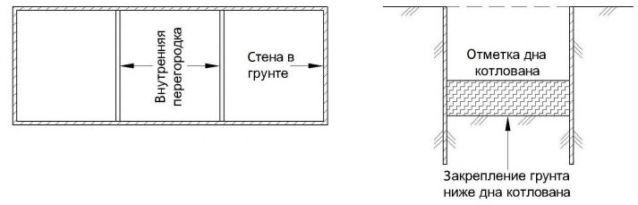
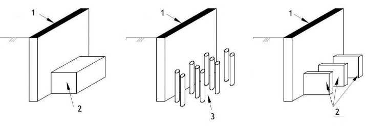
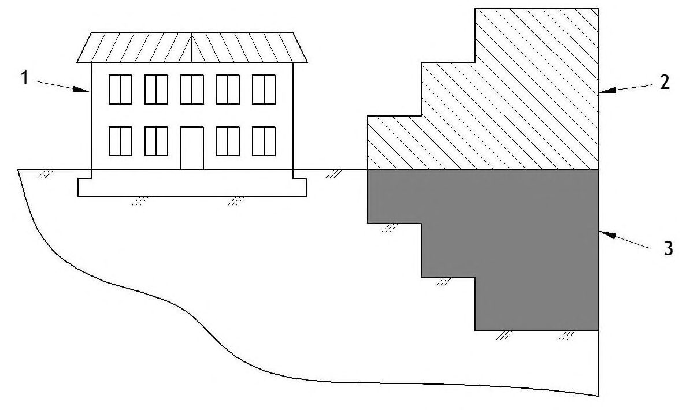
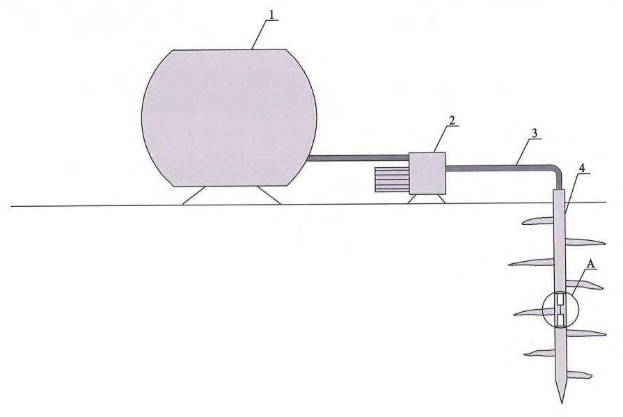
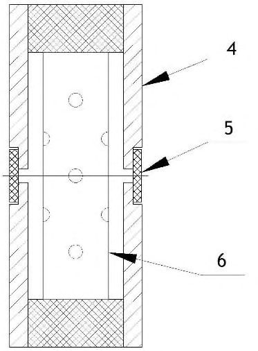
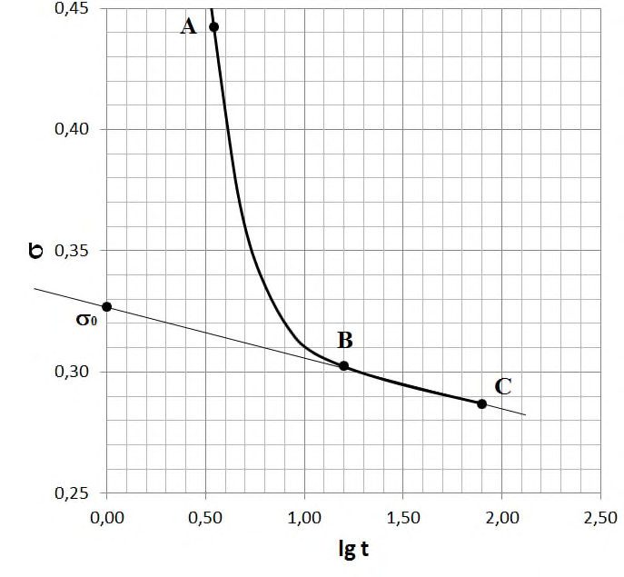

СП 361.1325800.2017 «Здания и сооружения. Защитные мероприятия в зоне влияния ст»
О документе: разработчики, утверждение, регистрация, ключевые слова
СВОД ПРАВИЛ
СП 361.1325800.2017
Издание официальное
1 ИСПОЛНИТЕЛЬ - Акционерное общество «Научно-исследовательский центр «Строительство» (АО «НИЦ «Строительство») - Научно-исследовательский, проектноизыскательский и конструкторско-технологический институт оснований и подземных сооружений им Н.М. Герсеванова (НИИОСП им. Н.М. Герсеванова)
2 ВНЕСЕН Техническим комитетом по стандартизации ТК 465 «Строительство»
3 ПОДГОТОВЛЕН к утверждению Департаментом градостроительной деятельности и архитектуры Министерства строительства и жилищно-коммунального хозяйства Российской Федерации (Минстрой России)
4 УТВЕРЖДЕН Приказом Министерства строительства и жилищно-коммунального хозяйства Российской Федерации от 14 ноября 2017 г. № 1537/пр и введен в действие с 15 мая 2018 г.
5 ЗАРЕГИСТРИРОВАН Федеральным агентством по техническому регулированию и метрологии (Росстандарт)
6 ВВЕДЕН ВПЕРВЫЕ
В случае пересмотра (замены) или отмены настоящего свода правил соответствующее уведомление будет опубликовано в установленном порядке. Соответствующая информация, уведомление и тексты размещаются также в информационной системе общего пользования - на официальном сайте разработчика (Минстрой России) в сети Интернет
© Минстрой России, 2017
Настоящий нормативный документ не может быть полностью или частично воспроизведен, тиражирован и распространен в качестве официального издания на территории Российской Федерации без разрешения Минстроя России
Дата введения - 2018-05-15
УДК
ОКС 93.020
Ключевые слова: подземные сооружения, защитные мероприятия, проектирование, производство работ, грунты, фундаменты, конструкции здания
\_\_\_\_\_\_\_\_\_\_\_\_\_\_\_\_\_\_\_\_\_\_\_\_\_\_\_\_\_\_\_\_\_\_\_\_\_\_\_\_\_\_\_\_\_\_\_\_\_\_\_\_\_\_\_\_\_\_\_\_\_\_\_\_\_\_\_\_\_\_\_\_\_\_\_\_\_
Введение
Настоящий свод правил разработан с учетом требований федеральных законов от 27 декабря 2002 г. № 184-ФЗ «О техническом регулировании» [1], от 29 декабря 2004 г. № 190-ФЗ «Градостроительный кодекс Российской Федерации» [2] и от 30 декабря 2009 г. № 384-ФЗ «Технический регламент о безопасности зданий и сооружений» [3].
Свод правил содержит указания по проектированию и выполнению защитных мероприятий в зоне влияния строительства подземных сооружений, в том числе заглубленных частей зданий.
Настоящий свод правил разработан АО «НИЦ «Строительство» - НИИОСП им. Н.М.Герсеванова (руководители темы - канд. техн. наук И.В. Колыбин, канд. техн. наук О.А. Шулятьев ; исполнители - канд. техн. наук В.В. Астряб , канд. техн. наук В.Г. Буданов , канд. техн. наук Ю.В. Вишняков , канд. техн. наук Ф.Ф. Зехниев , канд. техн. наук М.Н. Ибрагимов , канд. техн. наук С.А. Рытов , канд. техн. наук В.В. Семкин , канд. техн. наук А.Н. Скачко , канд. техн. наук А.В. Скориков , канд. техн. наук А.Н. Труфанов , канд. техн. наук М.М. Тупиков , канд. техн. наук А.В. Шапошников , канд. техн. наук П.И. Ястребов , Д.А. Внуков , О.А. Мозгачева , В.С. Поспехов ) при участии д-ра техн. наук В.А. Ильичева , д-ра геол.-мин. наук В.В. Знаменского , д-ра техн. наук Н.С. Никифоровой , д-ра геол.-мин. наук А.Г. Шашкина , канд. техн. наук К.Г. Шашкина .
СП 361.1325800.2017
1Область применения
Настоящий свод правил содержит требования к проектированию и выполнению защитных мероприятий в зоне влияния строительства подземных сооружений, в том числе заглубленных частей зданий и сооружений (далее - подземные сооружения).
Настоящий свод правил не распространяется на проектирование защитных мероприятий в процессе строительства подземных магистральных трубопроводов, могильников для захоронения отходов, сооружений специального назначения, а также сооружений, возводимых на многолетнемерзлых грунтах.
2Нормативные ссылки
В настоящем своде правил использованы нормативные ссылки на следующие документы:
ГОСТ 5686-2012 Грунты. Методы полевых испытаний сваями
ГОСТ 10178-85 Портландцемент и шлакопортландцемент. Технические условия
ГОСТ 12248 -2010 Грунты. Методы лабораторного определения характеристик прочности и деформируемости
ГОСТ 19912-2012 Грунты. Методы полевых испытаний статическим и динамическим зондированием
ГОСТ 20276-2012 Грунты. Методы полевого определения характеристик прочности и деформируемости
ГОСТ 20522-2012 Грунты. Методы статистической обработки результатов испытаний
ГОСТ 23118-99 Конструкции стальные строительные. Общие технические условия ГОСТ 24211-2008 Добавки для бетонов и строительных растворов. Общие техниче- ские условия
\_\_\_\_\_\_\_\_\_\_\_\_\_\_\_\_\_\_\_\_\_\_\_\_\_\_\_\_\_\_\_\_\_\_\_\_\_\_\_\_\_\_\_\_\_\_\_\_\_\_\_\_\_\_\_\_\_\_\_\_\_\_\_\_\_\_\_\_\_\_\_\_\_\_\_\_\_
Buildings and constructions. Protective measures in the zone of influence of construction of underground objects
2 ГОСТ 24846-2012 Грунты. Методы измерения деформаций оснований зданий и сооружений ГОСТ 26798.1-96 Цементы тампонажные. Методы испытаний ГОСТ 27751-2014 Надежность строительных конструкций и оснований. Основные положения ГОСТ 30416-2012 Грунты. Лабораторные испытания. Общие положения ГОСТ 31108-2016 Цементы общестроительные. Технические условия ГОСТ 31937-2011 Здания и сооружения. Правила обследования и мониторинга технического состояния ГОСТ Р 55567-2013 Порядок организации и ведения инженерно-технических исследований на объектах культурного наследия. Памятники истории и культуры. Общие требования СП 15.13330.2012 «СНиП II-22-81* Каменные и армокаменные конструкции (с изменениями № 1, № 2) СП 16.13330.2017 «СНиП II-23-81* Стальные конструкции» СП 20.13330.2016 «СНиП 2.01.07-85* Нагрузки и воздействия» СП 22.13330.2016 «СНиП 2.02.01-83* Основания зданий и сооружений» СП 23.13330.2011 «СНиП 2.02.02-85* Основания гидротехнических сооружений» (с изменением № 1) СП 24.13330.2011 «СНиП 2.02.03-85 Свайные фундаменты» (с изменением № 1) СП 28.13330.2017 «СНиП 2.03.11-85 Защита строительных конструкций от коррозии» СП 35.13330.2011 «СНиП 2.05.03-84* Мосты и трубы» (с изменением № 1) СП 45.13330.2017 «СНиП 3.02.01-87 Земляные сооружения, основания и фундаменты» СП 47.13330.2016 «СНиП 11-02-96 Инженерные изыскания для строительства. Основные положения» СП 48.13330.2011 «СНиП 12-01-2004 Организация строительства» (с изменением № 1) СП 63.13330.2012 «СНиП 52-01-2003 Бетонные и железобетонные конструкции» (с изменениями № 1, № 2, № 3) СП 64.13330.2017 «СНиП II-25-80 Деревянные конструкции» (с изменением № 1) СП 70.13330.2012 «СНиП 3.03.01-87 Несущие и ограждающие конструкции» (с изменениями № 1, № 3)
СП 116.13330.2012 «СНиП 22-02-2003 Инженерная защита территорий, зданий и сооружений от опасных геологических процессов. Основные положения»
СП 164.1325800.2014 Усиление железобетонных конструкций композитными материалами. Правила проектирования
СП 246.1325800.2016 Положение об авторском надзоре за строительством зданий и сооружений
СП 248.1325800.2016 Сооружения подземные. Правила проектирования
СП 249.1325800.2016 Коммуникации подземные. Проектирование и строительство закрытым и открытым способами
Примечание - При пользовании настоящим сводом правил целесообразно проверить действие ссылочных документов в информационной системе общего пользования - на официальном сайте федерального органа исполнительной власти в сфере стандартизации в сети Интернет или по ежегодному информационному указателю «Национальные стандарты», который опубликован по состоянию на 1 января текущего года, и по выпускам ежемесячного информационного указателя «Национальные стандарты за текущий год. Если заменен ссылочный документ, на который дана недатированная ссылка, то рекомендуется использовать действующую версию этого документа с учетов всех внесенных в данную версию изменений. Если заменен ссылочный документ, на который дана датированная ссылка, то рекомендуется использовать версию этого документа с указанным выше годом утверждения (принятия). Если после утверждения настоящего свода правил в ссылочный документ, на который дана датированная ссылка, внесено изменение, затрагивающее положение, на которое дана ссылка, то это положение рекомендуется применять без учета данного изменения. Если ссылочный документ отменен без замены, то положение, в котором дана ссылка на него, рекомендуется применять в части, не затрагивающей эту ссылку. Сведения о действии сводов правил целесообразнео проверить в Федеральном информационном фонде стандартов.
3Термины и определения
В настоящем своде правил применены следующие термины с соответствующими определениями:
- 3.1авторский надзор
- Контроль лица, осуществившего подготовку проектной документации, за соблюдением в процессе строительства требований проектной документации и подготовленной на ее основе рабочей документации.Источник: СП 246.1325800.2016, статья 3.1
- 3.2геотехнический барьер
- Конструкция из ряда инъекторов, расположенная между объектом геотехнических работ и существующими защищаемыми объектами в вертикальной, горизонтальной или наклонной плоскостях, для выполнения работ по компенсационному нагнетанию.
- [[СП 45.13330.2017, статья 3.10]](http
- //docs.cntd.ru/document/1200084710)
- 3.3геотехнический мониторинг
- Комплекс работ, основанный на натурных наблюдениях за поведением конструкций вновь возводимого или реконструируемого сооружения, его основания, в том числе грунтового массива, окружающего (вмещающего) сооружение, и конструкций сооружений окружающей застройки. Геотехнический мониторинг осуществляется в период строительства и на начальном этапе эксплуатации вновь возводимых или реконструируемых объектов.
- [[СП 22.13330.2016, статья 12.1]](http
- //docs.cntd.ru/document/1200084710)
- 3.4геотехнический прогноз
- Комплекс работ аналитического и расчетного характера, цель которых - качественная и количественная оценка поведения оснований, фундаментов и конструкций проектируемого сооружения и окружающей застройки в процессе строительства и в начальный период эксплуатации.Источник: СП 248.1325800.2016, статья 3.1.5
- 3.5геотехнический экран (здесь)
- Сплошная или прерывистая линейная конструкция, которая устраивается в грунтах из различных материалов и по различным технологиям и позволяет отделить или ограничить область грунтового массива, в котором возникают изменения его напряженно-деформированного состояния от строительства новых заглубленных или подземных сооружений, от области грунтового массива, вмещающего конструкции фундаментов окружающей застройки (в том числе подземные коммуникации).
- 3.6грунтовый анкер
- Геотехническая конструкция, предназначенная для передачи осевых выдергивающих нагрузок от закрепляемой конструкции на несущие слои грунта только в пределах корневой части своей длины и состоящая из трех частей: оголовка, тяги анкера и корня.Источник: СП 45.13330.2017, статья 3.12
- 3.7закрепление грунта
- Улучшение механических и физических свойств грунта путем введения в грунт твердеющих растворов в режиме пропитки или перемешивания. [СП 45.13330.2017, статья 3.17]
- 3.8заполнительная цементация
- Инъекция цементного раствора в грунт по манжетной технологии в целях заполнения пор и возможных полостей в грунте (подготовка грунтового массива к компенсационному нагнетанию).
- 3.9защитные мероприятия (здесь)
- Технические решения по защите окружающей застройки от сверхнормативных деформаций и прочих недопустимых воздействий, оказываемых строительством подземного сооружения.
- 3.10зона влияния нового строительства или реконструкции
- Расстояние, за пределами которого негативное воздействие на окружающую застройку пренебрежимо мало. [СП 22.13330.2016, статья 3.16]
- 3.11категория технического состояния
- Степень эксплуатационной пригодности несущей строительной конструкции или здания и сооружения в целом, а также грунтов их основания, установленная в зависимости от доли снижения несущей способности и эксплуатационных характеристик.Источник: ГОСТ 31937-2011, статья 3.6
- 3.12компенсационное нагнетание
- Способ недопущения развития осадок фундаментов зданий и сооружений, превышающих предельные дополнительные значения путем нагнетания в грунт твердеющих растворов через скважины (инъекторы), располагаемые между объектом геотехнических работ и рядом расположенными защищаемыми объектами.
- 3.13наблюдательный метод
- Метод проектирования, предполагающий возможность корректировать проект на основании результатов геотехнического мониторинга.Источник: СП 248.1325800.2016, статья 3.1.17
- 3.14надзор за строительством
- Комплекс специальных мероприятий, проводимых заказчиком, проектировщиком и организацией, осуществляющей научно-техническое сопровождение и мониторинг, а также другими контролирующими государственными организациями по обеспечению безопасности строительства и последующей эксплуатации строящегося сооружения и окружающей застройки.Источник: СП 248.1325800.2016, статья 3.1.18
- 3.15научно-техническое сопровождение
- Комплекс работ научно-аналитического, методического, информационного, экспертно-контрольного и организационного характера, осуществляемых в процессе изысканий, проектирования и строительства в целях обеспечения надежности сооружений с учетом применения нестандартных расчетных методов, конструктивных и технологических решений.
- [[СП 22.13330.2016, статья 3.22]](http
- //docs.cntd.ru/document/1200084710)
- 3.16окружающая застройка
- Существующие здания и сооружения, инженерные и транспортные коммуникации, расположенные вблизи объектов нового строительства или реконструкции. ``` [СП 22.13330.2016, статья 3.23] 3.17 ```
- подземное сооружение или подземная часть сооружения
- Сооружение или часть сооружения, расположенные ниже уровня поверхности земли (планировки).
- [[СП 22.13330.2016, статья 3.28]](http
- //docs.cntd.ru/document/1200084710)
- 3.18сопоставимый опыт
- Документированная либо иная четко установленная информация, относящаяся к свойствам дисперсных и скальных грунтов, аналогичных рассматриваемым в проекте, для которых следует ожидать сходного поведения конструкций, аналогичных используемым в проекте.Источник: СП 248.1325800.2016, статья 3.1.26
- 3.19усиление грунта
- Улучшение механических свойств грунта путем закрепления, уплотнения, армирования или изменения напряженно-деформированного состояния массива грунта.
- [[СП 45.13330.2017, статья 3.46]](http
- //docs.cntd.ru/document/1200084710)
- 3.20элемент закрепленного грунта
- Закрепленный объем грунта, имеющий контролируемые физико-механические и геометрические параметры, обеспечивающие проектные требования.
4Общие положения
СП 361.1325800.2017 б) устройство защитных мероприятий не должно вызывать дополнительное технологическое воздействие на защищаемые здания;
- в) в случае невозможности выполнения требования перечисления б) в полной мере необходимо учитывать при проектировании дополнительные деформации фундаментов от технологического воздействия;
- г) конструкция защитных мероприятий должна быть надежной, обладать необходимой прочностью и долговечностью, быть технически и технологически осуществимой;
- д) технические решения должны иметь возможность реализации с учетом технического состояния объекта и доступа для выполнения работ.
- изменение конструктивного решения подземного сооружения для минимизации воздействия на окружающую застройку;
- усиление конструкций защищаемых зданий;
- усиление фундаментов и грунта основания;
- устройство геотехнических отсечных экранов, геотехнических барьеров, завес, стенок, расположенных между подземным сооружением и защищаемым зданием.
5Требования к инженерно-геологическим и инженерно-геотехническим изысканиям
- анализ архивных данных результатов изысканий;
- разработка конструктивных решений подземной части проектируемого сооружения;
- принятие проектного решения по выбору фундамента строящегося сооружения;
- принятие проектного решения по типу ограждающей конструкции и крепления котлована;
- принятие проектного решения по технологии устройства и конструкции обделки сооружения, устраиваемого закрытым способом;
- определение расчетной зоны влияния нового строительства на окружающую застройку;
- обследование зданий, попадающих в зону влияния нового строительства, включая обследование фундаментов и грунтов основания;
- геотехнический прогноз осадок фундаментов зданий окружающей застройки;
- определение зданий, требующих проведения защитных мероприятий;
- выбор вида защитных мероприятий;
- выбор вида усиления фундаментов зданий, попадающих в зону влияния нового строительства;
СП 361.1325800.2017
- выбор вида усиления грунтов оснований зданий, попадающих в зону влияния нового строительства.
Скважины для отбора монолитов грунтов следует располагать в створе предполагаемого размещения геотехнического барьера. Глубина буровых скважин должна превышать проектную глубину геотехнического барьера не менее чем на 1 м.
6Обследование конструкций существующих зданий и сооружений
6.1Общие положения
- сбор исходной информации по объемно-планировочным и конструктивным решениям зданий, времени их постройки, продолжительности и нормативным срокам их эксплуатации;
- поиск и изучение архивной документации инженерно-геологических изысканий;
- анализ ранее выполненных обследований;
- визуальное обследование здания с составлением планов и разрезов здания, а также дефектных ведомостей фасадов и внутренних несущих конструкций с фотофиксацией дефектов и схемами их положения;
- проходку шурфов и обследование фундаментов и основания под ними для определения конструкции и глубины заложения фундамента, наличия в них дефектов, определение прочности материала фундаментов и определение категории их технического состояния;
- сбор нагрузок на фундамент и основание, проверочный расчет прочности фундамента и деформации основания;
- определение категории технического состояния конструкций здания по результатам визуального обследования;
- определение необходимости разработки защитных мероприятий по обеспечению сохранности здания;
- в необходимых случаях определение прочности материалов строительных конструкций.
При детальном обследовании конструкций, в которых при осмотре обнаружены серьезные дефекты, следует выполнить инструментальное обследование.
Инструментальные обследования включают измерения:
- длины и ширины раскрытия трещин;
- деформаций несущих конструкций, в том числе прогибов;
- характеристик материала конструкций методами неразрушающего контроля или проведением испытаний отобранных образцов;
- общих и относительных осадок фундаментов здания.
Возможные изменения состояния от воздействия нагрузок вероятностного характера типа проявления карстовой опасности, суффозионных процессов, связанных с атмосферными осадками и протечками водонесущих коммуникаций, в том числе аварийными, рассматривать не следует.
6.2Обследование фундаментов
- проходка шурфов с отбором монолитов грунта из-под подошвы фундамента
- бурение скважин с отбором образцов, определением уровня подземных вод (УПВ);
- зондирование грунтов;
- визуальное обследование фундаментов и обмерные работы;
- детальное (инструментальное) обследование фундаментов, включающее определение прочности материала фундамента, наличие армирования и его параметры, получение сведений по гидроизоляции;
- поверочные расчеты (расчетное сопротивление, осадки и несущая способность основания и фундамента);
- составление технического отчета.
6.3Обследование конструкций надземной части зданий и сооружений
- визуальное обследование технического состояния основных несущих конструкций на предмет выявления деформаций;
- детальное обследование с определением прочностных характеристик материалов основных несущих конструкций;
- измерение необходимых для выполнения целей обследования геометрических параметров зданий (сооружений), конструкций, их элементов и узлов и сопоставление их с имеющейся проектной документаций;
- измерения значений крена зданий и т. д.
6.4Назначение категории технического состояния
Таблица 6.1 Категории технического состояния сооружения
| Категория технического состояния сооружения по СП 22.13330 (в скобках - по ГОСТ 31937) | Характеристика технического состояния сооружения |
|---|---|
| I - нормальное (нормативное) | Выполняются требования норм. Необходимость ремонтных работ отсутствует |
| II - удовлетворительное (работо- способное) | Удовлетворяются требования норм, относящиеся к предельным состояниям первой группы; требования, относящиеся к предельным состояниям второй группы, могут быть нарушены, но в конкретных условиях эксплуа- тации, при отсутствии дополнительных внешних воздей- ствий, не возникает нарушения работоспособности здания. Усиление конструкций не требуется, достаточен текущий ремонт с устранением локальных повреждений |
| III - неудовлетворительное (огра- ниченно-работоспособное) | Имеются дефекты и повреждения, приведшие к снижению несущей способности, но отсутствуют опасность внезап- ного разрушения и угроза для безопасности людей. Функ- ционирование конструкций и эксплуатация здания или со- оружения возможны либо при контроле (мониторинге) тех- нического состояния, либо при проведении необходимых мероприятий по восстановлению или усилению конструк- ций и (или) грунтов основания и последующем монито- ринге технического состояния (при необходимости) |
| IV - предаварийное или аварийное (аварийное) | Существующие повреждения свидетельствуют о непригод- ности конструкций к эксплуатации, об исчерпании несу- щей способности и опасности обрушения и недопустимо- сти пребывания людей в зоне расположения конструкций |
фактического исполнения допускается улучшать категорию технического состояния здания в соответствии с таблицей Д.1 СП 22.13330.2016 при наличии соответствующей проектной документации, в состав которой в отдельных случаях следует включать расчет системы «основание - фундамент - сооружение».
7Оценка влияния нового строительства на окружающую застройку
7.1Расчет влияния нового строительства.
- габариты зоны влияния с выделением зоны интенсивных перемещений, где значение осадки превышает 1 см;
- дополнительные деформации существующих зданий (вертикальные и горизонтальные перемещения, относительную разность осадок фундаментов);
- общие перемещения инженерных коммуникаций;
- общие перемещения инженерных сооружений городской и транспортной инфраструктуры.
Примечания
1 Программное обеспечение, используемое для геотехнических расчетов, должно быть апробировано профильной организацией и предоставлять возможность реализации моделей, описывающих нелинейное поведение грунта, последовательность возведения конструкций и изменение гидрогеологических условий в процессе строительства.
2 Апробация программного обеспечения осуществляется путем сопоставления результатов расчета по программе с тестовыми примерами, данными мониторинга, а также путем оформления разрешительных документов в установленном действующим законодательством Российской Федерации порядке на использование данного программного обеспечения.
7.2Оценка технологического воздействия
7.2.2. Если технологические процессы устройства геотехнических конструкций могут быть смоделированы численно, допускается использовать такие расчеты как для определения значения осадки здания, так и в рамках экспертно-аналитического подхода.
- расстояние между фундаментом здания и «стеной в грунте»;
- длина захватки «стены в грунте»;
- давление по подошве фундамента;
- плотность бентонитового раствора.
- уменьшение длины захватки;
- увеличение плотности бентонитового раствора;
- устройство геотехнического барьера по методу компенсационного нагнетания согласно 8.6.
8Проектирование защитных мероприятий
8.1Общие положения
- конструктивные, вызванные вступлением в работу проектируемой конструкции в соответствии с проектным решением, например, связанные с перемещением ограждающей конструкции и дна котлована в процессе экскавации грунта, с осадкой строящегося сооружения или складированием материалов, и т. п.;
- технологические, происходящие в процессе устройства ограждений котлованов, анкеров, свай, щитовой проходки и др., т.е. связанные с технологией выполнения работ и применяемыми машинами и механизмами;
- климатические, обусловленные перемещением ограждающей конструкции котлована, вызванным температурными деформациями распорок и ограждающих конструкций, а также промерзанием грунта за «стеной в грунте» и ниже дна котлована;
- изменение УПВ в процессе водопонизительных работ или барражного эффекта при устройстве заглубленных сооружений;
- активизация негативных процессов в грунтовом массиве, связанная с выполнением геотехнических работ (суффозионные процессы, образование плывунов и пр.).
В таблице 8.1 представлены защитные мероприятия для существующих зданий и сооружений, применяемые при строительстве подземных сооружений рядом с ними, в зависимости от факторов, вызывающих дополнительные деформации основания фундаментов.
Таблица 8.1 Защитные мероприятия для существующих зданий и сооружений, применяемые при устройстве котлована
| Факторы, вызывающие дополнительные деформации основания фунда- ментов окружающей застройки | Факторы, вызывающие дополнительные деформации основания фунда- ментов окружающей застройки | Факторы, вызывающие дополнительные деформации основания фунда- ментов окружающей застройки | Факторы, вызывающие дополнительные деформации основания фунда- ментов окружающей застройки | Факторы, вызывающие дополнительные деформации основания фунда- ментов окружающей застройки | |
|---|---|---|---|---|---|
| Защитные мероприятия | Конструктив- ные | Технологиче- ские | Климатиче- ские | Изменение УПВ | Негатив- ные про- цессы (суффозия и пр.) |
| Конструктивные мероприятия (изменение проектных решений): | Конструктивные мероприятия (изменение проектных решений): | Конструктивные мероприятия (изменение проектных решений): | Конструктивные мероприятия (изменение проектных решений): | Конструктивные мероприятия (изменение проектных решений): | Конструктивные мероприятия (изменение проектных решений): |
| Повышение жесткости ограждающей конструкции | + | - | + | - | - |
| Повышение жесткости удер- живающей си- стемы | + | - | + | - | - |
| Исключение во- допонижения путем устрой- ства противо- фильтрационной завесы | + | - | - | + | + |
| Усиление конструкций существующих зданий, включая грунты основания фундаментов | Усиление конструкций существующих зданий, включая грунты основания фундаментов | Усиление конструкций существующих зданий, включая грунты основания фундаментов | Усиление конструкций существующих зданий, включая грунты основания фундаментов | Усиление конструкций существующих зданий, включая грунты основания фундаментов | Усиление конструкций существующих зданий, включая грунты основания фундаментов |
| Усиление фун- даментов | + | + | + | + | + |
| Закрепление 1) и армирование грунта основа- ния | + | + | + | + | + |
| Усиление верх- них конструк- ций 2) | + | + | + | + | + |
| Геотехнические отсечные экраны, геотехнические барьеры | Геотехнические отсечные экраны, геотехнические барьеры | Геотехнические отсечные экраны, геотехнические барьеры | Геотехнические отсечные экраны, геотехнические барьеры | Геотехнические отсечные экраны, геотехнические барьеры | Геотехнические отсечные экраны, геотехнические барьеры |
| Стенки из от- дельных элемен- тов (свай, труб и пр.) 3) | ± | ± | ± | - | - |
| Стенки в виде водонепроница- емой завесы | - | - | - | + | + |
| Геотехнический барьер | + | + | + | - | - |
- 1) Если грунт поддается закреплению.
- 2) Применяется только для снижения неравномерных осадок фундаментов.
- 3) Защитные мероприятия сами могут вызвать дополнительные осадки.
Примечание - В настоящей таблице применены следующие обозначения:
- «+» - мероприятие эффективно;
- «-» - мероприятие неэффективно;
- «±» - эффективность недостаточна для безусловного применения.
8.1.7 Защитные мероприятия подразделяются на два вида:
- пассивные - выполняемые однократно; при проектировании используют исходные параметры (характеристики грунта, нагрузки и воздействия) без изменения НДС массива грунта;
- активные - могут выполняться многократно; с их помощью возможно дополнительное воздействие на НДС массива грунта (восстановление, регулирование и т. п.).
- результаты инженерно-геологических изысканий объекта строительства, включая, при необходимости, архивные материалы;
- проектная документация объекта нового строительства;
- проекты производства работ (ППР) и технологические регламенты (при наличии) на выполнение геотехнических видов работ;
- проектная или исполнительная документация по конструктивным решениям существующего (защищаемого) здания или сооружения, его фундаментам и грунтам основания;
- результаты технического обследования конструкций защищаемого здания, включая фиксацию имеющихся дефектов в основных несущих конструкциях (трещины, сколы, коррозия арматуры и бетона, разрушение материала конструкций), а также результаты обследования фундаментов (глубина заложения, ширина подошвы, материал, состояние) и грунта основания (вид и состояние);
- оценка влияния устройства подземной выработки на существующее (защищаемое) здание или сооружение без защитных мероприятий.
- механическую безопасность объекта на период строительства (реконструкции) и последующей эксплуатации:
- снижение расчетных значений дополнительных деформаций и (или) их относительной разности до требуемых нормативных значений, определяемых в соответствии с 7.1.6;
- повышение несущей способности основания;
- выравнивание деформационных характеристик основания в плане и по глубине;
- локальное усиление грунтов в местах образовавшихся зон разуплотнения;
- защиту от воздействий вибрации, подтопления и иных опасных техногенных или геологических процессов и явлений, в том числе противокарстовую защиту.
- характер влияния строительства, в том числе способ строительства подземной части проектируемого объекта;
- степень влияния (значения расчетных осадок, изменения инженерно-геологических и гидрологических условий, технологических и вибрационно-динамических воздействий) и расстояние между проектируемым и защищаемым объектами;
- техническое состояние защищаемого объекта (категория технического состояния, конструктивная схема);
- статус исторической и культурной ценности защищаемого объекта [4];
- особенности инженерно-геологического строения участка;
- доступ и возможность выполнения работ во внутренних помещениях объекта с учетом возможной эксплуатации объекта во время работ по усилению;
- необходимость выполнения работ по усилению конструкций надземной части;
- очередность, при необходимости, выполнения работ по усилению конструкций надземной части.
- усилия в конструкциях защищаемых зданий и сооружений, дополнительные перемещения фундаментов, их относительная неравномерность и крен должны соответствовать значениям, не превышающим предельно допустимых значений для защищаемого объекта, определенных на основании его категории технического состояния;
- работы по устройству защитных мероприятий не должны вызывать недопустимые технологические воздействия на защищаемый объект, приводящие к ухудшению его технического состояния и нарушению механической безопасности;
- принятые проектные решения должны обеспечивать возможность реализации с учетом технического состояния объекта и доступа для выполнения работ.
Расчет по несущей способности следует проводить для защитных мероприятий, указанных в перечислениях а) и б) 8.1.6. Расчет по деформациям проводят во всех случаях проектирования защитных мероприятий.
- для конструкций - в соответствии с требованиями СП 15.13330, СП 16.13330, СП 24.13330, СП 63.13330, СП 64.13330, СП 249.1325800;
- для оснований - в соответствии с СП 22.13330 и настоящим сводом правил.
8.2Корректировка конструктивных решений нового строительства для снижения воздействия на окружающую застройку
- минимизации осадок.


- а) Создание внутренней перегородки б) Закрепление грунта ниже дна котлована
Рисунок 8.1 - Повышение жесткости удерживающей системы ограждающей конструкции

а единичный контрфорс; б - армирование грунта сваями; в - группа контрфорсов
1 «стена в грунте»; 2 - единичный контрфорс; 3 - грунт, армированный сваями
Рисунок 8.2 - Специальные геотехнические конструкции внутри котлована

1 существующее здание; 2 ступенчатая надземная часть; 3 ступенчатое подземное пространство
Рисунок 8.3 - Пример устройства ступенчатого пространства подземной и надземной частей строящегося здания
- перенос трассы линейного сооружения;
- изменение глубины заложения линейного сооружения;
- изменения технологии производства работ.
- уменьшение перебора грунта в процессе строительства;
- применение компенсационного нагнетания твердеющих растворов в заобделочное пространство;
- изменение скорости проходки.
8.3Усиление конструкций существующих зданий
- в [6] - усиление стальными напрягаемыми тяжами;
- [6]-[9] - усиление стальными и железобетонными обоймами;
- СП 164.1325800 - усиление неметаллической арматурой;
- [6], [9] - усиление инъецированием.
8.4Усиление фундаментов
8.4.1 Общие положения
- 8.4.1.1 Необходимость усиления фундаментов зданий и сооружений определяют по результатам оценки влияния строительства подземного сооружения при проведении геотехнического прогноза.
- 8.4.1.2 Выделяют два способа усиления свайных фундаментов: усиление ростверков и устройство дополнительных свай.
- 8.4.1.3 Критериями при проектировании усиления оснований и фундаментов являются предельно допустимые значения дополнительных осадок основания фундаментов.
- 8.4.1.4 При разработке проекта усиления фундаментов сваями необходимо прогнозировать ожидаемые дополнительные осадки основания до усиления и после него, а также усилия в сваях.
- 8.4.1.5 Разработке проекта усиления должны предшествовать инженерно-геологические изыскания, состав работ и объем которых должны соответствовать требованиям действующих нормативных документов и положениям настоящего свода правил.
- 8.4.1.6 При устройстве свай усиления в случае недостаточной прочности материала фундамента необходимо выполнить его усиление.
- 8.4.1.7 Устройство свай осуществляют при наличии в геологическом разрезе основания слоя, пригодного для опирания на него свай.
8.4.1.8 Потребность в усилении фундаментов возникает при необходимости увеличения размеров фундамента в плане, значительных неравномерных прогнозных деформациях основания и в ряде других случаев.
8.4.1.9 Ближайшие к глубокому котловану сваи усиления следует устраивать до низа «стены в грунте» для обеспечения устойчивости зданий при возможном обрушении стенок траншеи.
8.4.1.10 Не допускается использовать буроинъекционные и вдавливаемые сваи в качестве защитного мероприятия для зданий при креплении ограждения котлована анкерами в связи с возможностью снижения их несущей способности вследствие повреждения или разуплотнения грунта при устройстве анкеров.
8.4.2 Усиление фундаментов буроинъекционными сваями
8.4.2.1 Буроинъекционные сваи применяют в следующих случаях:
- для стабилизации осадок фундаментов существующих зданий и сооружений при изменении конструктивной схемы объекта усиления;
- для минимизации воздействия строительства подземного сооружения на расположенное рядом здание.
8.4.2.2 Проектирование усиления существующего фундамента осуществляют в зависимости от его вида и технического состояния.
8.4.2.3 Предварительные размеры (диаметр и длина) буроинъекционных свай назначают с учетом инженерно-геологических условий площадки строительства, нагрузки, которую должны воспринимать сваи, вида и состояния усиливаемого фундамента, несущей способности свай, прогнозируемой в соответствии с опытом проектировщика или определяемой в соответствии с требованиями нормативных документов, а также расчетом численным методом.
8.4.2.4 Расчет буроинъекционных свай по прочности материала ствола выполняют в соответствии с требованиями СП 24.13330 и СП 63.13330.
8.4.2.5 Армирование буроинъекционных свай выполняют по расчету. Сваи армируют сварными каркасами. Допускается применять жесткую арматуру в виде проката черных металлов или стальных труб. Арматура сваи может быть однородной по длине и комбинированной, например труба или прокат в зоне действия изгибающего момента и каркас на остальной длине сваи.
8.4.2.6 Арматура без антикоррозионной защиты буроинъекционных свай должна иметь фиксирующие элементы, центрирующие ее в скважине и обеспечивающие требуемую толщину защитного слоя бетона. Расстояние между фиксаторами по длине каркаса должно быть не более шести диаметров скважины, а толщина защитного слоя при отсутствии антикоррозионной защиты - не менее 2,5 см.
8.4.2.7 Конструкция сварного стыка рабочей арматуры каркасов должна обеспечивать его равнопрочность и удобство производства работ по инъецированию бетона в скважину.
8.4.2.8 Совместная работа буроинъекционных свай и усиливаемых фундаментов должна быть обеспечена заделкой сваи, длина которой определяется расчетом. Для фундаментов из кладки кирпича, камня известняка, бутовых фундаментов длина заделки свай должна быть не менее пяти диаметров сваи при бурении с глинистой промывкой и не менее четырех диаметров при бурении с продувкой воздухом. В случае невозможности обеспечения заделки должно быть предусмотрено усиленное армирование или уширение ствола сваи в месте примыкания сваи к подошве ростверка. Отношение диаметра уширенной части к диаметру скважины в пределах фундамента должно составлять не менее 1,15.
8.4.2.9 Для уточнения несущей способности буроинъекционных свай усиления в конкретных условиях проектная организация может назначать проведение статических испытаний опытных буроинъекционных свай в соответствии с требованиями ГОСТ 5686 и СП 24.13330. В результате испытаний должна быть установлена расчетная нагрузка, допускаемая на сваю, Р , кН.
8.4.2.10 Рабочая документация по усилению оснований и фундаментов с помощью буроинъекционных свай должна содержать:
- титульный лист;
- план участка работ;
- состав проекта;
- ведомости объемов работ и потребности в материалах;
- общие указания к проекту;
- план свайного поля при усилении оснований и фундаментов буроинъекционными сваями;
- разрезы (сечения) по усиляемым фундаментам с буроинъекционными сваями;
- конструкции буроинъекционных свай усиления, чертежи арматурных каркасов;
- технологические схемы устройства свай усиления (по усмотрению проектной организации);
- технологические схемы линий подачи растворов;
- технологические схемы коммуникаций;
- рабочую документацию на устройство растворных узлов со схемами размещения рабочего оборудования.
- 8.4.2.11 При расчете несущей способности буроинъекционных свай следует руководствоваться требованиями СП 24.13330.
8.4.2.12 Буроинъекционные сваи применяют для защиты зданий, имеющих категории технического состояния конструкций II и III, статус объекта культурного наследия (памятника истории и культуры) [4].
- 8.4.2.13 Буроинъекционные сваи не следует применять как защитные мероприятия для зданий всех категорий технического состояния состояния конструкций в мелких и пылеватых водонасыщенных песках, в особенности обладающих плывунными свойствами, поскольку при устройстве ограждения котлована возможны разуплотнение этих грунтов и снижение несущей способности свай по боковой поверхности.
- 8.4.2.14 Буроинъекционные сваи не следует применять в качестве защитных мероприятий для зданий, примыкающих к котлованам глубиной более 15 м, поскольку вследствие недостаточной жесткости они не обеспечивают отсутствие деформаций в основании зданий.
8.4.3 Проектирование фундаментов из вдавливаемых многосекционных свай
- 8.4.3.1 Принципиальные технические схемы погружения вдавливаемых свай следует принимать в зависимости от конкретных условий устройства элементов, воспринимающих нагрузку от домкратов.
- 8.4.3.2 Для осуществления усиления фундаментов вдавливаемыми сваями требуется:
- наличие пространства под фундаментом или упорным элементом (рисунок 8.4);
- отсутствие пространства под упорным элементом (рисунок 8.5);
- наличие свободного доступа к месту погружения свай (рисунок 8.6);
- наличие соседних несущих стен в стесненных условиях при устройстве новых фундаментов под стены или оборудование в условиях реконструкции (рисунок 8.7). а
Рисунок 8.4 - Схема погружения свай при наличии пространства под упорным элементом

Рисунок 8.5 - Схема погружения свай при отсутствии пространства под упорным элементом

1 - свая; 2 - гидродомкрат; 3 - упор;
- насосная станция;
- существующий фундамент;
- пригрузочные блоки;
- стык сваи
Примечание - Упор - временный груз; тележка на рельсовом ходу.
Рисунок 8.6 - Схема погружения свай при наличии свободного доступа
1 - свая; 2 - гидродомкрат; 3 - упор; 4 - насосная станция; 5 - существующий фундамент; 6 - шурф; 7 - металлические раскосы; 8 - металлическая обойма; 9 - стык сваи
Примечание - Упор - стальная ферма.
Рисунок 8.7 - Схема погружения свай при наличии соседних несущих стен в стесненных условиях
8.4.3.3 Выбор упорных элементов определяется конкретными условиями и возможностями подрядной организации.
8.4.3.4 Расчетную схему усиливаемого фундамента, включающего существующий фундамент и многосекционные сваи, выбирают с учетом требуемой несущей способности, типа фундамента и условий производства работ.
8.4.4 Усиление фундаментов при повреждении их поверхности
8.4.4.1 Защиту фундаментов от выветривания следует выполнять при физическом и химическом выветривании материала фундаментов, когда кладка затронута неглубоко и отсутствуют сквозные трещины в фундаментах.
8.4.4.2 Поверхность фундаментов необходимо восстанавливать оштукатуриванием цементным раствором по подготовленной (зачищенной) боковой поверхности фундаментов или оштукатуриванием по металлической сетке, укрепленной на их поверхности. При проектировании рекомендуется предусматривать использование технологии набрызга и торкретирования.
8.4.4.3 Для усиления фундамента следует зацементировать кладку, укрепив тем самым существующий фундамент, либо выполнить обойму, восстановив несущие функции фундамента.
8.4.4.4 При выветривании раствора кладки фундамента на всю ширину его цементацию следует выполнять путем бурения с поверхности первого или подвального этажа в кладке фундамента скважин и нагнетания в них цементного раствора.
8.4.4.5 Нагнетание следует проектировать с учетом выполнения на опытной площадке с последующей проверкой результатов и уточнением технологии и состава работ.
8.5Усиление грунтов основания
- инъекционный - реализующий закрепление за счет нагнетания в грунт химических или цементационных растворов с помощью погружаемых инъекторов или через скважины (смолизация, силикатизация, цементация) методами пропитки (без нарушения структуры грунта) или заполнительной цементации (с частичным или полным изменением структуры грунта в зоне инъекции);
- струйная цементация - реализующий закрепление за счет использования энергии струи раствора (воды, воздуха) с полным изменением структуры грунта и формированием элементов закрепленного грунта [грунтоцементных элементов (ГЦЭ)], обладающих заданными характеристиками;
- буросмесительный (глубинное перемешивание) -реализующий закрепление за счет механического перемешивания разрушенного грунта с подаваемым вяжущим (полное изменение структуры) и позволяющий при минимальных технологических воздействиях закреплять грунты как в основании зданий, так и вблизи несущих конструкций, формируя элементы закрепленного грунта (грунтоцемента) правильной формы, с заданными характеристиками.
- определение проектных требований и выбор способа усиления;
- разработка программы дополнительных изыскательских работ, включающих комплекс лабораторных работ и, при необходимости, опытных полевых работ по закреплению грунтов;
- выбор конструктивной схемы усиления грунтов и назначение предварительных расчетных параметров закрепления;
- назначение предварительных размеров зоны усиления и отдельных элементов закрепления;
- выполнение расчетов и корректировка, при необходимости, зоны усиления и расчетных параметров закрепления;
- назначение расчетных параметров закрепления, технологической последовательности выполнения работ, разработка графической части проекта, определение проектных объемов материалов и стоимости работ;
- проведение опытно-производственных работ и, при необходимости, корректировка значений расчетных параметров, назначение рабочих параметров закрепления;
- авторское сопровождение работ по закреплению.
- расчетные показатели закрепляемых грунтов;
- технологические параметры закрепления.
- механические характеристики закрепленного грунта - прочность на одноосное сжатие Rstb, сцепление cstb , угол внутреннего трения φ stb ;
- деформационные характеристики закрепленного грунта - модуль деформации Еstb , коэффициент Пуассона закрепленного грунта ν stb (при необходимости);
- геометрические параметры элементов (зон) закрепления.
Таблица 8.2 -Нормативные характеристики песчаных грунтов, закрепленных инъекцией химических и цементных растворов, в зависимости от нормативного сопротивления
| Способы закрепления песка | Характеристи ки грунта | Средние значения характеристик закрепленных песков при нормативном сопротивлении R stb , МПа | Средние значения характеристик закрепленных песков при нормативном сопротивлении R stb , МПа | Средние значения характеристик закрепленных песков при нормативном сопротивлении R stb , МПа | Средние значения характеристик закрепленных песков при нормативном сопротивлении R stb , МПа |
|---|---|---|---|---|---|
| 0,5 | 1,0 | 1,5 | 2,0 | ||
| Силикатизация двух- растворная | c stb , МПа stb , град E stb , МПа | 0,10 40 70 | 0,2 41 150 | 0,3 42 215 | 0,54 43 280 |
| Силикатизация одно- растворная с H 2 SiF 6 | c stb , МПа stb , град E stb , МПа | 0,10 39 40 | 0,21 40 90 | 0,3 40,5 130 | 0,55 41 170 |
| Силикатизация газовая | c stb , МПа stb , град E stb , МПа | 0,10 39 40 | 0,2 40 80 | 0,37 41 120 | 0,55 42 160 |
| Смолизация карбамидной смолой | c stb , МПа stb , град E stb , МПа | 0,12 39 50 | 0,21 41 110 | 0,35 41,5 165 | 0,50 42 220 |
| Цементация микроцементом - особо тонким дисперс- ным вяжущим | c stb , МПа stb , град E stb , МПа | 0,12 40 100 | 0,27 42 200 | 0,41 42,5 275 | 0,56 43 350 |
- расчетный радиус - расстояние от оси скважины (инъектора) до границы закрепления, за пределами которой закрепление отсутствет (зависит от вида и свойств раствора, фильтрационных характеристик грунта и технологических параметров инъекции, включая свойства растворов), назначаемое при проектировании и определяемое по глубине закрепления по результатам опытных работ;
- расчетная глубина - расстояние от верхней до нижней границы закрепления в пределах сечения с расчетным радиусом, за пределами которой закрепление отсутствует;
- б) для закрепления по технологии струйной цементации:
- расчетный радиус - назначаемое при проектировании и определяемое по глубине закрепления по результатам опытных работ расстояние от оси скважины до условной границы закрепления, за пределами которой закрепление отсутствует;
- расчетная глубина - назначаемое при проектировании расстояние от верхней до нижней границы закрепления в пределах сечения с расчетным радиусом, за пределами которой закрепление отсутствует;
- в) для буросмесительного способа закрепления (глубинное перемешивание):
- расчетный радиус - расстояние от оси скважины до границы закрепления, за пределами которой закрепление отсутствует (задается размером бурового инструмента), назначаемое при проектировании;
- расчетная глубина - назначаемое при проектировании расстояние от нижней до верхней границы закрепления (задается проектом с учетом технических характеристик оборудования), но не более 25 м.
Таблица 8.3 -Нормативные характеристики грунтов, закрепленных цементацией по струйной и буросмесительной технологии, в зависимости от нормативного сопротивления одноосному сжатию
| Виды грунта | Характеристики грунтоцемента - закрепленного | Средние значения характеристик закрепленных грунтов при нормативном сопротивлении одноосному сжатию R stb , МПа | Средние значения характеристик закрепленных грунтов при нормативном сопротивлении одноосному сжатию R stb , МПа | Средние значения характеристик закрепленных грунтов при нормативном сопротивлении одноосному сжатию R stb , МПа | Средние значения характеристик закрепленных грунтов при нормативном сопротивлении одноосному сжатию R stb , МПа | Средние значения характеристик закрепленных грунтов при нормативном сопротивлении одноосному сжатию R stb , МПа | Средние значения характеристик закрепленных грунтов при нормативном сопротивлении одноосному сжатию R stb , МПа |
|---|---|---|---|---|---|---|---|
| грунта | 0,5 | 1,0 | 2,0 | 3,0 | 4,0 | 5,0 | |
| Песок | c stb , МПа | 0,15 | 0,25 | 0,58 | 0,67 | 0,88 | 1,05 |
| stb , град | 41 | 42 | 44 | 45 | 47 | 48 | |
| E stb , МПа | 95 | 195 | 370 | 510 | 625 | 700 | |
| Супесь, суглинок | c stb , МПа | 0,07 | 0,15 | 0,41 | 0,49 | - | - |
| stb , град | 39 | 41 | 42 | 43 | - | - | |
| E stb , МПа | 50 | 125 | 230 | 315 | - | - |
СП 361.1325800.2017
| Виды грунта | Характеристики грунтоцемента - закрепленного | Средние значения характеристик закрепленных грунтов при нормативном сопротивлении одноосному сжатию R stb , МПа | Средние значения характеристик закрепленных грунтов при нормативном сопротивлении одноосному сжатию R stb , МПа | Средние значения характеристик закрепленных грунтов при нормативном сопротивлении одноосному сжатию R stb , МПа | Средние значения характеристик закрепленных грунтов при нормативном сопротивлении одноосному сжатию R stb , МПа | Средние значения характеристик закрепленных грунтов при нормативном сопротивлении одноосному сжатию R stb , МПа | Средние значения характеристик закрепленных грунтов при нормативном сопротивлении одноосному сжатию R stb , МПа |
|---|---|---|---|---|---|---|---|
| грунта | 0,5 | 1,0 | 2,0 | 3,0 | 4,0 | 5,0 | |
| Глина ( I L ≤ 0,5) | c stb , МПа | 0,07 | 0,14 | 0,79 | - | - | - |
| Глина ( I L ≤ 0,5) | stb , град | 39 | 40 | 42 | - | - | - |
| Глина ( I L ≤ 0,5) | E stb , МПа | 40 | 110 | 205 | - | - | - |
Таблица 8.4 Расчетный радиус закрепления грунтов способами цементации
| Технология закрепления | Грунт | Коэффици- ент фильтра- ции, м/сут | Характерис- тики раствора | Расчетный радиус закрепле- ния, м | Удельная поверхность цемента, см² /г |
|---|---|---|---|---|---|
| Цементация инъекцией микроцемента | Песок различной крупности | ≥5 | В/Ц = 5-6 | 0,20-0,25 0,25-0,4 | 20 000 16 000 |
| Цементация инъекцией микроцемента | Песок различной крупности | ≥10 | В/Ц = 4-5 | ||
| Цементация инъекцией микроцемента | Песок различной крупности | ≥20 | В/Ц = 3-4 | 0,4-0,5 | 14 000 |
| Цементация инъекцией портландцемен- та | Песок гравелис- тый | ≥80 | В/Ц = 3-4 | 0,4-0,5 | 5 000 |
| Цементация инъекцией портландцемен- та | Песок гравелис- тый | ≥100 | В/Ц = 3-4 | 0,5-0,8 | 3 000 |
| Струйная цементация: Jet1 Jet2 | Песок | Не влияет | В/Ц = 0,8-1 | 0,25-0,4 0,45-0,8 | - |
| Струйная цементация: Jet1 Jet2 | Связный грунт (глина, суглинок, супесь) | Не влияет | В/Ц = 0,8-1 | 0,2-0,4 0,35-0,6 | - |
| Глубинное | Песок | Не влияет | В/Ц = 0,6 | 2,5-3,0 | - |
| перемешивание | Связный грунт | Не влияет | В/Ц = 0,6 | 0,2-2,5 | - |
Примечание - Примененные в настоящей таблице условные обозначения систем струйной цементации Jеt1 и Jet2 см. в пункте 3.40 СП 22.13330.2016.
R
где Rn,stb нормативное сопротивление одноосному сжатию закрепленного грунта, МПа; γ -коэффициент надежности по закреплению, принимаемый в отсутствие результатов опытных работ равным 1,4. В случае проведения опытных работ значение коэффициента надежности по закреплению следует устанавливать на основе статистической обработки результатов испытаний по методике, изложенной в ГОСТ 20522.
- закрепление по одному или нескольким способам;
- контроль качества закрепления.
Для сооружений повышенного уровня ответственности (класс сооружений КС-3), уникальных сооружений [2], а также объектов 3-й геотехнической категории по СП 22.13330 объем опытных работ должен составлять не менее 3 % общего объема закрепления.
- по стадиям выполнения контрольных работ - входной, операционный, приемочный;
- объему контролируемых параметров - сплошной;
- периодичности проведения - непрерывный;
- методам проведения контроля - измерительный, визуальный, технический осмотр и регистрационный.
СП 361.1325800.2017
Требования к контрольным работам на опытной площадке должны обеспечивать выполнение положений СП 45.13330 и настоящего свода правил.
- контроль геометрических параметров элементов закрепленного грунта формы поперечного и продольного сечений (выполняется в контрольных шурфах);
- отбор проб в поперечном и продольном сечениях элемента закрепления, изготовление контрольных образцов и их испытание на одноосное сжатие;
- контрольное бурение в закрепленном грунте с отбором кернов, изготовление контрольных образцов и их испытание на одноосное сжатие;
- геофизические или ультразвуковые исследования сплошности и однородности закрепления по глубине закрепления, если это предусмотрено проектом;
- испытания отдельных участков статическими нагрузками, если это предусмотрено проектом.
- задание на проектирование (проектная организация) и ППР (производитель работ или организация - разработчик ППР);
- исполнительную документацию по опытным работам, включающую акты освидетельствования скрытых работ, исполнительные схемы, колонки контрольных скважин, акты лабораторных испытаний кернов (образцов из кернов или проб), другие результаты исследований, в том числе акты геофизических исследований сплошности и однородности закрепления (производитель работ).
- по стадиям выполнения контрольных работ - входной, операционный, приемочный;
- объему контролируемых параметров - сплошной и выборочный;
- периодичности проведения - непрерывный и периодический;
- методам проведения контроля - измерительный, визуальный, технический осмотр и регистрационный.
Требования к контрольным работам должны обеспечивать выполнение положений СП 45.13330 и настоящего подраздела.
8.5.23 Состав проекта усиления грунтов основания
8.5.23.1 Проект усиления грунтов основания следует выполнять в соответствии с требованиями действующих нормативных документов, Оформление чертежей должно отвечать требованиям стандартов системы проектной документации для строительства (СПДС).
8.5.23.2 Проект усиления грунтов основания, выполняемый в рамках защитных мероприятий для сохранности окружающей застройки, входит в раздел 12 «Иная документация в случаях, предусмотренных федеральными законами» (см. [5]).
8.5.23.3 Проект должен включать следующие разделы: а) «Конструктивные решения», включая пояснительную записку и графическую часть; б) «Проект организации строительства» (ПОС), содержащий пояснительную записку и графическую часть.
8.5.23.4 Раздел «Конструктивные решения» должен состоять:
- из пояснительной записки, в которую помимо разделов, требуемых стандартами СПДС и иными нормативными документами, должны быть включены раздел по выбору и обоснованию технических решений по усилению грунтов основания, расчетное обоснование и технико-экономические характеристики сравниваемых вариантов, выполненных с соблюдением необходимых условий сопоставимости;
- графической части, в которую помимо чертежей, требуемых стандартами СПДС и иными нормативными документами, должны быть включены технические условия на усиление грунтов основания, инженерно-геологические разрезы и профили с нанесением на них инженерно-геологических элементов и указанием границ усиления, физико-механических характеристик грунтов, включая плотность, влажность, показатель консистенции связных грунтов. К спецификациям и ведомостям объемов работ дополнительно прилагаются пооперационные ведомости параметров усиления, включая группы грунтов по бурению, вид бурения, количество подаваемого крепителя по глубине.
8.5.23.5 Раздел ПОС проекта усиления грунтов основания должен состоять из пояснительной записки, графической части и технологического регламента выполнения работ по усилению грунтов основания.
В технологическом регламенте указывают:
- расчетные технологические параметры усиления;
- очередность выполнения работ по усилению на объекте;
- требования (задание) на выполнение опытно-производственных работ;
- требования по контролю качества на этапе опытно-производственных работ и основных работ по усилению грунтов основания.
8.6Геотехнические отсечные экраны и геотехнические барьеры
- инженерно-геологические условия площадки стротиельства;
- расчетные и предельные дополнительные деформации оснований фундаментов существующих зданий окружающей застройки;
- влияние нагрузки от существующих зданий и сооружений на деформации конструкции ограждения котлована;
- технологические осадки от устройства геотехнического отсечного экрана.
- для защиты существующего здания от устройства ограждающей конструкции и разработки котлована - в зависимости от глубины котлована и длины ограждающей конструкции, а также от их расстояния до существующего здания;
- для защиты существующего здания от нового строительства - от значения сжимаемой толщи и расстояния между зданием и новым строительством;
- для защиты существующего здания от проходки тоннеля - от диаметра и глубины заложения тоннеля и расположения его относительно фундаментов здания.
где σ z - вертикальное напряжение от веса вышележащего грунта, кПа; σ z - вертикальное дополнительное напряжение на рассматриваемой глубине от внешней нагрузки, кПа;
- коэффициент Пуассона;
С - сцепление грунта, кПа.
По опыту устройства геотехнических барьеров было установлено, что давление гидравлического разрыва на первой стадии до глубины 15 м не превышает 0,5 МПа.
- 8.16.18. Требуемый объем для инъекции твердеющего раствора определяется в зависимости от объема раствора:
- необходимого для создания требуемых объемных деформаций грунта (определяется в результате численного расчета);
- заполнившего поры и отдельные пустоты в грунте;
- профильтровавшегося за расчетную зону инъекции (приложение И).
- зона инъекции в плане и по высоте;
- расстояние между точками инъектирования в плане;
- давление нагнетания;
- расход твердеющего раствора;
- состав раствора;
- применяемое оборудование;
- методы и количественные параметры контроля качества.
- строительный генеральный план с расположением контуров объекта нового строительства и существующих подземных коммуникаций;
- схема расположения элементов геотехнического отсечного экрана;
- разрезы по геотехническому отсечному экрану, включающие в себя данные инженерно-геологических изысканий;
- технологические схемы с описанием последовательности и методов производства работ;
- потребность в механизмах и материалах по этапам;
- указания по технике безопасности, охране труда и охране окружающей среды.
- строительный генеральный план с расположением контуров объекта нового строительства и существующих подземных коммуникаций;
- схема расположения инъекторов;
- разрезы по точкам инъектирования, содержащие данные инженерно-геологических изысканий;
- технологические схемы с описанием последовательности и методов производства работ;
- потребность в механизмах и материалах по этапам;
- указания по технике безопасности, охране труда и охране окружающей среды.
9Выполнение защитных мероприятий
9.1Усиление конструкций существующих зданий
- качество подготовки усиляемой поверхности;
- отклонение от проекта конструкций усиления при их монтаже;
- соответствие усилий в напрягаемых элементах требуемому значению;
- наличие обварки крепежных деталей после напряжения;
- наличие антикоррозионной защиты конструкций усиления.
- рабочие и деталировочные чертежи стальных конструкций;
- документы предприятия-изготовителя о соответствии, оформленные в порядке, установленном действующим законодательством;
- документы о согласовании допущенных отступлений от чертежей при изготовлении и монтаже;
- документы, удостоверяющие качество материалов;
- акты освидетельствования скрытых работ;
- журналы работ;
- документы о контроле качества сварных соединений;
- документы о предварительном напряжении конструкций;
- акты на защитное покрытие;
- копии удостоверений монтажников и сварщиков конструкций.
- качество формующей поверхности элементов опалубки;
- отклонение от вертикали плоскостей опалубки и линий их пересечения;
- смещение осей опалубки от проектного положения.
- правильность установки опалубки;
- зазор между арматурой и опалубкой;
- соответствие проекту применяемых видов, марок и диаметров арматурной стали, размеров каркасов, расстояния между стержнями.
Приемку смонтированных арматурных изделий осуществляют до укладки бетона и оформляют акт освидетельствования скрытых работ.
- соответствие бетонной смеси требованиям проекта усиления;
- правильность установки и закрепления опалубки;
- наличие смазки поверхности съемной опалубки, соприкасающейся при бетонировании с бетонной смесью;
- прочность бетона при распалубке усиленной конструкции.
Приемку-сдачу выполненных работ оформляют двухсторонним актом.
- глубину просверленных скважин;
- качество закрепления инъекционной трубки в скважине;
- давление, при котором подают инъекционный раствор;
- тщательность заполнения трещин в кладке.
9.2Усиление фундаментов
9.2.1 Общие требования
- 9.2.1.1 Проведению работ по усилению фундаментов должно предшествовать выполнение соответствующих подготовительных мероприятий и внутриплощадочных работ.
- 9.2.1.2 Подготовительные мероприятия включают:
- согласование графика работ по усилению фундаментов;
- определение последовательности усиления фундаментов;
- организацию инструментального геодезического и визуального наблюдения по маякам за поведением несущих конструкций;
- ознакомление исполнителей с ППР;
- контроль качества и техники безопасности.
- 9.2.1.3 Внутриплощадочные работы включают:
- обеспечение доступа к фундаментам;
- устройство необходимых монтажных проемов, электроосвещения согласно ППР;
- монтаж вспомогательных устройств и механизмов;
- организацию временных складских площадок;
- комплектацию площадки строительства необходимыми механизмами и оборудованием;
- завоз свай, упорных элементов и других узлов, деталей и материалов согласно рабочим чертежам.
- 9.2.1.4 Перед началом работ должны быть сняты нулевые отсчеты по всем геодезическим маркам и зафиксировано состояние настенных маяков.
- 9.2.1.5 Работы по устройству свай завершаются составлением акта, подписываемого исполнителем, автором проекта и заказчиком.
- 9.2.2.1 Работы по устройству буроинъекционных свай отражают записью в журнале (приложение Г).
- 9.2.2.2 В зависимости от типа и состояния существующих фундаментов и типов грунта бурение скважин следует выполнять станками пневмоударного или колонкового бурения, с использованием проходного шнека или с промывкой скважин глинистым раствором.
- 9.2.2.3 При устройстве буроинъекционных свай могут быть применены теряемые или инвентарные кондукторы.
- 9.2.2.4 Арматурный каркас должен быть установлен в проектное положение, а стыковка его секций должна проводиться сваркой.
- 9.2.2.5 Бетонная смесь подается в скважину по буровому ставу или через трубуинъектор снизу-вверх с помощью бетононасосов под давлением, назначаемым в проекте.
- 9.2.2.6 Не допускается понижение уровня бетонной смеси в устье скважины более 1,5 м, в неустойчивых грунтах - ниже нижней кромки трубы-кондуктора.
- 9.2.2.7 При отрицательных температурах прочность бетона свай с противоморозными добавками к моменту замерзания бетона до температуры, на которую рассчитано количество добавок, должна быть не менее 20 % проектной.
9.2.2.8 Для производства бетонных работ при температуре воздуха выше 25 °С и относительной влажности менее 50 % густота цементного теста должна быть не более 27 %. Температура бетонной смеси не должна превышать 30 °С - 35 °С.
9.2.3 Устройство свай по разрядно-импульсной технологии
- 9.2.3.1 Разрядно-импульсную обработку (РИО) следует выполнять в порядке, указанном в перечислениях а) и б):
- а) Обработка забоя:
- электродную систему устанавливают на забой скважины;
- проводят серию электровзрывов до падения уровня бетонной смеси в скважине на заданное проектом расчетное значение;
- РИО продолжают до получения отказа;
- проверяют степень уплотнения разрушенного буровым инструментом грунта (наличия рыхлого грунта в основании свай-РИТ) на «отскок», для чего электродную систему устанавливают на грунт в забое скважины, после разряда определяют значение погружения ее в грунт. При погружении электродной системы в грунт основания за один электровзрыв менее 1 см грунт основания принимается соответствующим требованию средней плотности. При осадке электродной системы более 1 см РИО забоя скважины следует продолжать, периодически проверяя плотность грунта. б) Формирование тела сваи:
- в песчаных грунтах РИО ствола сваи следует выполнять ярусами шагом 0,3-0,5 м при движении снизу вверх в водонасыщенных песках или сверху вниз в песках малой и средней степени водонасыщения;
- в связных грунтах РИО ствола сваи следует выполнять ярусами шагом 0,75-1,0 м (3-3,5 диаметра сваи).
Верхняя часть ствола сваи-РИТ на глубину 2,0 м не подвергается РИО.
9.2.3.2 В процессе формирования тела сваи необходимо периодически доливать бетонной смесью до верхней грани кондуктора. Долив смеси следует проводить после перемещения излучателя вверх на новый горизонт и снижения уровня бетонной смеси до нижней кромки трубы-кондуктора.
9.2.3.3 При монтаже арматурного каркаса его нижнюю секцию погружают в скважину и вывешивают для соединения с верхней секцией, которую устанавливают соосно нижней, и стыкуют секции между собой.
- 9.2.3.4 Секции арматурного каркаса следует соединять внахлест или специальными муфтами. Не допускается соединять секции электродуговой сваркой.
- 9.2.3.5 При погружении арматурного каркаса в скважину допускается:
- вращение каркаса вокруг продольной оси;
- использование вибраторов, вибропогружателей общей мощностью до 5 кВт;
- поднятие на высоту до 4 м и опускание каркаса - погружение «в расходку».
9.2.3.6 Для устройства свай применяют самоуплотняющиеся бетонные смеси. Следует проводить дополнительное уплотнение бетонной смеси в верхнем сечении сваи глубинным вибратором на глубину 1,5-2,0 м.
9.2.3.7 При устройстве буроинъекционных свай для снижения технологического воздействия на конструкции защищаемого здания следует применять технологии, обеспечивающие восстановление начального НДС грунтового массива, например БКС, в которых опрессовка скважины избыточным давлением осуществляется через каждый метр по глубине скважины.
9.2.4 Производство работ по усилению фундаментов вдавливаемыми сваями
9.2.4.1 Производство работ по усилению фундаментов вдавливаемыми сваями осуществляют с учетом требований СП 45.13330.
9.2.4.2 Работы по вдавливанию свай проводят в последовательности, установленной проектом.
9.2.4.3 В процессе вдавливания свай ведут журнал и составляют акты на освидетельствование скрытых работ. Должны быть обеспечены констролируемые показатели и предельные отклонения по таблице 9.1.
9.2.4.4 Для устройства фундаментов из вдавливаемых свай рекомендуется использовать сборные железобетонные секции, соединяемые по мере вдавливания болтами, штырями либо сваркой. Стыки составных свай должны быть рассчитаны на нагрузки, возникающие в процессе погружения секций, а также на нагрузки, передаваемые на многосекционные сваи при эксплуатации зданий и сооружений. При отсутствии горизонтальных, выдергивающих и моментных нагрузок допускается использовать стальные штыри диаметром
40-50 мм, длиной 250-300 мм конструктивно, которые устанавливают вдоль продольной оси секций в предназначенных для них гнездах соответствующих размеров. Используют также стальные трубы либо сварные короба, также стыкуемые болтами или сваркой по мере погружения, полость которых подлежит обязательному заполнению песчаным (мелкозернистым) бетоном.
9.2.4.5 Работы по усилению фундаментов вдавливаемыми сваями выполняют в такой последовательности:
- устройство на месте упорного элемента;
- монтаж, при необходимости, страховочных подкосов или растяжек;
- установка первой секции сваи;
- размещение на верхнем торце первой секции сваи гидродомкрата и подключение его к насосной станции;
- погружение первой секции;
- использование инвентарных приспособлений, если ход домкрата меньше длины секции сваи;
- стыкование следующей секции и погружение ее в установленном порядке;
- наращивание секций и их вдавливание до достижения сопротивлением сваи проектного значения;
- сбрасывание давления в гидродомкрате до расчетного усилия и поддержание этого усилия до условной стабилизации;
- передача нагрузки на сваю по принятому в проекте решению;
- антикоррозионное покрытие стальных элементов усиления, бетонирование проемов и узлов усиления.
9.2.4.6 При расчетном усилии вдавливания по достижении условной стабилизации проводят соединение последней секции сваи с упорным элементом, если он сохраняется на период эксплуатации, или фундаментными конструкциями. Критерии условной стабилизации при расчетном усилии вдавливания назначают проектом. Длину вдавливаемых свай определяют достижением расчетного усилия вдавливания при условной стабилизации перемещений сваи и фиксируют для каждой сваи методами прямого контроля длины погруженных секций. При этом должна быть обеспечена несущая способность сваи по грунту, заданная проектом и подтверждаемая статическими испытаниями свай по ГОСТ 5686.
9.2.4.7 Домкраты следует снимать только после передачи нагрузки на вдавленные сваи.
9.2.4.8 Работы по вдавливанию свай и передаче на них нагрузок сопровождаются записью в журнале (приложение Д). Основные контролируемые параметры устройства вдавливаемых свай, которых следует придерживаться при производстве работ, приведены в таблице 9.1.
9.2.4.9 Контроль состояния маяков и инструментальное измерение осадок здания осуществляют в соответствии с указаниями раздела 10.
Таблица 9.1 Основные контролируемые показатели и их предельные отклонения
| Контролируемые показатели | Предельные отклонения |
|---|---|
| Максимальное усилие в домкрате, кН | 5% |
| Скорость осадки марок, мм/сут | ≤ 0,2 |
| Раскрытие трещин в маяках для реконструируемых зданий,мм | Δ=±0,2 |
| Критерий стабилизации осадки последней секции сваи за 30 | Δ 4 < 0,1 |
| Отклонение в размерах расчетных сварочных швов, мм: | |
| - длина | Δ' 5 = +10 |
| - поперечное сечение | Δ'' 5 = +5 |
| Местоположение сваи в плане, мм | Δ 6 = ±20 |
| Отклонение секции от вертикали при установке под домкрат, мм | Δ 7 = ±5 |
9.2.4.10 Техническую эффективность усиления вдавленными сваями оценивают по материалам геодезического наблюдения за осадками и кренами фундаментов зданий и сооружений.
9.2.5 Производство работ по усилению фундаментов
9.2.5.1 При усилении фундаментов скважины цементации следует выполнять методами колонкового бурения. Инъекцию раствора следует проводить с помощью пакеров, раскрепляемых в кондукторах, заделанных в тело фундамента на растворе. Давление нагнетания должно составлять 0,2-1,0 МПа. За условный отказ следует принимать давление 0,5л/мин, если иное не предусмотрено проектом, но не более 1л/мин.
9.2.5.2 Для обжатия грунтов допускается применять плоские домкраты. В них нагнетают твердеющую жидкую смесь, например цементный раствор или эпоксидную смолу, которые после обжатия грунта основания сохраняют напряженное состояние за счет затвердевания. Контроль за обжатием следует вести по манометру.
9.2.5.3 Растворы для цементации фундаментов должны отвечать требованиям проекта и быть стабильными (водооотделение не более 2 %), В/Ц - 0,5-0,63. Сроки начала схватывания - не ранее 45 мин и не более 90 мин, расплыв по конусу в соответствии с ГОСТ 26798.1 - 18-28 см.
Вяжущее, применяемое для иъекционных растворов, должно обеспечивать надежное сцепление с материалами усиливаемого фундамента. При усилении фундаментов из бута-известняка, выполненного на известковом растворе, следует применять инъекционные растворы на цементном вяжущем с добавками извести. В качестве основного вяжущего применяют общестроительные цементы по ГОСТ 31108. Для регулирования составов допускается применять добавки, классификация которых приведена в СП 45.13330.
9.2.5.4 При незначительных повреждениях фундамента вместо цементации устраивают рубашку. Рубашку выполняют из раствора на крупном песке методом штукатурки или торкретирования, а также пневмонабрызгом бетона или укладкой его в опалубку.
9.2.5.5 В случаях, когда осуществление цементации затруднительно, кладку допускается усиливать железобетонными обоймами на всю высоту фундамента или его часть. В ленточных фундаментах противоположные стенки обоймы в отдельных случаях соединяют между собой анкерами из арматурной стали и поперечными балками. В некоторых случаях обоймы рекомендуется устраивать с предварительной установкой в них инъекционных труб для последующей цементации. В этом случае в процессе цементации обоймы препятствуют вытеканию раствора из фундамента и поступлению его в грунт.
9.2.5.6 При устройстве обойм свежий бетон укладывают после обязательной подготовки поверхности старой кладки с обязательным тщательным уплотнением бетонной смеси.
9.2.5.7 Для переустройства железобетонного столбчатого фундамента в ленточный между существующими фундаментами устраивают железобетонную стенку в виде перемычки. Для лучшего сопряжения перемычки на существующих фундаментах выполняют насечку и штрабы, а также оголяют арматуру для приварки арматуры перемычки. Кроме того, нижнюю часть перемычки выполняют в уровне подошвы существующего столбчатого фундамента. Перемычка охватывает подколонник железобетонной обоймой. Для повышения несущей способности нижнюю часть перемычки допускается выполнять уширенной.
9.3Усиление грунтов основания
- инъекционный - нагнетание в грунт химических или цементационных растворов с помощью погружаемых инъекторов или через скважины (смолизация, силикатизация, цементация);
- буросмесительный - механическое измельчение грунта без извлечения его на поверхность и последующее смешивание с цементом и другими вяжущими веществами специальным буровым устройством в процессе погружения или извлечения его с вращением с созданием элементов закрепленного грунта:
- струйный - разрушение грунта струей высокого давления в скважине и смешивание с цементным раствором с частичным или полным замещением грунтов цементным раствором.
Цементы для создания элементов закрепленного грунта, инъекции пропиткой или заполнительной цементации должны отвечать требованиям ГОСТ 31108. При наличии агрессивных подземных вод следует применять стойкие по отношению к ним цементы.
СП 361.1325800.2017 охраны труда при работе с соответствующими материалами. Приготовление растворов следует осуществлять в оборудованных помещениях растворосмесительных узлов в смесителях центробежного действия со скоростью вращения не менее 100 об/мин.
- объемы инъектируемого раствора (вяжущего) в пересчете на 1 м³ закрепляемого грунта;
- давление инъекции, назначаемое в зависимости от применяемого способа и фиксируемое на выходе из насоса и на входе в инъектор;
- рабочий расход подаваемого вяжущего в единицу времени (минуту);
- скорость перемещения вдоль оси скважины (инъектора, монитора, обтюратора);
- скорость вращения монитора;
- время выдержки на ступени обрабатываемого участка - захватки;
- объемы изливаемой пульпы (для струйной цементации грунтов) или изливаемого раствора (для инъекционных способов).
- проверка расположения элементов закрепления в плане;
- дата и время начала и окончания работ;
- параметры подаваемого вяжущего (плотность, водоотделение, осадка конуса, сроки схватывания, В/Ц, время гелеобразования, объем раствора);
- фиксация глубины погружения смесителя (монитора, инъектора) и отметки начала и окончания подачи вяжущего;
- порядок подачи вяжущего (при погружении или подъеме) и других компонентов, кратность циклов перемешивания;
- линейная скорость погружения и подъема смесителя, м/мин;
- частота вращения смесителя при погружении и подъеме, об/мин;
- давление подачи вяжущего, МПа;
- скорость подачи вяжущего, л/кг/мин;
- диаметр смесителя, форсунок монитора;
- контроль качества закрепленного грунта - отбор проб и испытание в лаборатории образцов (контрольные шурфы и керны);
- контроль несущей способности закрепленного грунта (при необходимости).
Таблица 9.2 Схема контроля качества
| Вид контроля. Технологичес- кий процесс или параметр | Контролируемые параметры и процессы | Метод и средство контроля | Периодичность | Исполнитель |
|---|---|---|---|---|
| Входной | Контроль качества поставляемых материалов | Визуальный. Регистрацион- ный | Непрерывный | Производитель работ |
| Операционный | Технологические параметры | Технологические параметры | Технологические параметры | Технологические параметры |
| Контроль вяжущего | Подвижность раствора вяжущего | Измеритель- ный (осадка конуса) | Периодический | Производитель работ |
| Контроль вяжущего | В/Ц раствора вяжущего | Измеритель- ный (технический ареометр) | Периодический | Производитель работ |
| Контроль вяжущего | Водоотделение | Измеритель- ный | Периодический | Производитель работ |
| Контроль вяжущего | Температура раствора вяжущего | Измеритель- ный | Периодический | Производитель работ |
| Контроль грунтоцемент- ной смеси (ГЦС) | Плотность ГЦС | Измеритель- ный (взвешивание контрольных образцов) | Периодический | Производитель работ |
| Контроль грунтоцемент- ной смеси (ГЦС) | Качество ГЦС | Измеритель- ный (количество изливаемой пульпы) | Периодический | Производитель работ |
| Контроль грунтоцемент- ной смеси (ГЦС) | Прочность на одноосное сжатие грунтоцемента | Измеритель- ный (контрольные образцы ГЦС в возрасте 7 и 28 сут) | Периодический (для одних грунтов и технологических параметров) | Профильная лаборатория |
| Контроль изго- товления ГЦЭ | Скорость подачи и извлечения буро- вого инструмента | Измеритель- ный | Непрерывный | Производитель работ |
| Контроль изго- товления ГЦЭ | Линейная скорость вращения бурового инструмента | Измеритель- ный | Непрерывный | Производитель работ |
СП 361.1325800.2017
| Вид контроля. Технологичес- кий процесс или параметр | Контролируемые параметры и процессы | Метод и средство контроля | Периодичность | Исполнитель |
|---|---|---|---|---|
| Расход подачи вяжущего | Измеритель- ный | Непрерывный | Производитель работ | |
| Контроль качества ГЦЭ в | Давление подачи вяжущего, воды, воздуха | Измеритель- ный | Непрерывный | Производитель работ |
| Объем изливаемой пульпы | Измеритель- ный | Непрерывный | Производитель работ | |
| Прочность на сжатие: - в партиях | Измеритель- ный | Периодический | Профильные организация и лаборатория | |
| конструкциях | - в конструкции | Испытания контрольных образцов, ме- тоды неразрушаю- щего контроля. В конструкции - методами не- разрушающего радиометричес- кого и ультра- звукового контроля по плотности и влажности | Периодический | Профильные организация и лаборатория |
| Другие характеристики ГЦЭ, указанные в проекте | В соответствии с технологичес- ким регламен- том и ППР | В соответствии с технологичес- ким регламентом и ППР | Профильные организация и лаборатория |
- а) Приемочный контроль осуществляется комиссией на основе сопоставления проектной и исполнительной документации.
- б) В исполнительную документацию дополнительно включают материалы контрольных работ. в) В рамках приемочного контроля могут быть проведены дополнительные работы по оценке качества закрепления по материалу и несущей способности по грунту, выполняемые на рабочих элементах закрепленного грунта. г) При приемке работ производитель работ представляет исполнительную документацию, в том числе:
- технические паспорта, документы, подтверждающие соответствие или другие документы, удостоверяющие качество применяемых материалов;
- журналы производства отдельных видов работ (приложение Е);
- акты освидетельствования скрытых работ;
- протоколы, акты испытаний контрольных образцов закрепленного грунта.
9.4Геотехнические отсечные экраны и геотехнические барьеры
1 - растворомешалка; 2 - насос; 3 - шланг высокого давления; 4 - инъектор; 5 -уплотнительная манжета; 6 - пакер
Рисунок 9.1 - Технологическая схема выполнения работ по устройству геотехнического барьера
СП 361.1325800.2017 влиять на техническое состояние существующих зданий. Способ погружения должен быть согласован с проектной организацией, разработавшей проект геотехнического барьера.
- акт разбивки инъекторов геотехнического барьера;
- буровой журнал (при необходимости);
- журнал установки инъекторов;
- журнал инъектирования;
- документ, подтверждающий соответствие цемента;
- документ, подтверждающий соответствие добавок и заполнителей.
Акт освидетельствования и приемки инъекционных скважин подписывают представители строительной организации, авторского надзора и строительного надзора заказчика.
- контроль разбивки оси инъекторов геотехнического барьера;
- контроль положения инъектора при погружении (угол наклона, глубина погружения);
- контроль параметров инъекторов (диаметр, общая длина, длина перфорированной части, наличие резиновых колец и т. д.);
- входной контроль качества исходных материалов;
- контроль состава приготовленного инъекционного раствора (не реже двух раз в рабочую смену);
- контроль соответствия методов погружения инъекторов и производства инъекционных работ проекту.
10Надзор за строительством, геотехнический мониторинг
В случае несовпадения освидетельствованных видов грунтов и их свойств, а также гидрогеологических условий с проектными данными следует незамедлительно сообщить об этом в проектную организацию для проведения соответствующей корректировки проектов или назначения дополнительных инженерно-геологических изысканий.
- систематическая фиксация изменений контролируемых параметров конструкций подземного сооружения и защищаемых зданий и геологической среды, оперативное выявление отклонений контролируемых параметров от прогнозных значений;
- анализ степени опасности выявленных отклонений контролируемых параметров и установление причин их возникновения;
- разработка рекомендаций, предупреждающих и устраняющих выявленные негативные процессы или причины, которыми они обусловлены.
АПриложение А. Методика определения характеристик релаксации грунтов в лабораторных условиях
А.1Общие положения
Испытание грунта по определению коэффициента релаксации напряжений проводят для определения характеристик релаксации напряжений дисперсных грунтов: коэффициента релаксации Кr и начального напряжения релаксации Ϭ0.
Данные характеристики определяются по результатам испытаний образцов грунта в условиях компрессионного сжатия в одометрах, исключающих возможность бокового расширения образца в процессе его вертикального нагружения.
Нагружение проводят вертикальным деформированием образца до заданной деформации с последующей фиксацией текущей высоты образца hi и напряжения Ϭ i (релаксации) во времени t i .
Испытания проводят в режиме «идеальной» релаксации, при которой вертикальная деформация образца за время релаксации напряжений пренебрежимо мала. Допустимое вертикальное перемещение в процессе релаксации напряжений не должно превышать 0,02 мм.
Значение принудительной деформации образца определяется техническим заданием и программой испытаний с учетом возможных деформаций грунта в реальных условиях.
Для испытаний используют образцы грунта ненарушенного сложения природной влажности, искусственно водонасыщенные образцы (если это требуется программой испытаний) или образцы нарушенного сложения с заданными значениями плотности и влажности (ГОСТ 30416).
В соответствии с требованиями ГОСТ 12248 образец должен иметь форму цилиндра диаметром не менее 71 мм и отношение диаметра к высоте от 2,8 до 3,5. Максимальный размер фракции грунта (включений, агрегатов) в образце должен быть не более 1/5 высоты образца.
А.2Оборудование для испытаний
Испытания грунтов по определению параметров релаксации проводят в компрессионных установках релаксационного типа, обеспечивающих принудительное деформирование образцов заданными значениями перемещений в условиях невозможности бокового расширения.
В состав компрессионной установки релаксационного типа для испытания грунта в режиме «идеальной» релаксации должны входить:
СП 361.1325800.2017
- одометр, состоящий из рабочего режущего кольца с внутренним диаметром не менее 71 мм и отношением диаметра к высоте от 2,8 до 3,5, цилиндрической обоймы, нижнего пористого диска, верхнего штампа, снабженного пористым диском, и поддона с каналами для отвода воды;
- механизм для вертикального деформирования образца грунта давлением до 10 МПа;
- устройства для измерения вертикальной нагрузки;
- датчика (датчиков) перемещений для фиксации изменения высоты образца.
Конструкция установки должна обеспечивать:
- подачу воды и ее отвод снизу образца;
- центрированную передачу нагрузки на штамп;
- измерение вертикальной нагрузки (давления) с погрешностью не более ±0,002 МПа;
- измерение вертикальной деформации с погрешностью не более ±0,002 мм;
- коэффициент жесткости нагрузочно-измерительной системы должен быть не ниже 4∙10 7 Н/м;
- первоначальную нагрузку на образец, создаваемую весом штампа и закрепленными на нем измерительными приборами, не более 0,0025 МПа.
А.3Проведение испытания
Образец грунта взвешивают в рабочем кольце и устанавливают в одометр в соответствии с указаниями пункта 5.4.3 ГОСТ 12248-2010.
Затем проводят вертикальное деформирование испытуемого образца равномерно, без ударов, до заданного программой испытаний значения перемещения.
После принудительного деформирования образца при фиксированном положении вертикального штампа фиксируют отсчеты по устройствам для измерения напряжений и вертикальных перемещений в такой последовательности: первый отсчет - сразу после достижения заданного перемещения, затем через 1, 2, 5, 10, 20 мин и далее с удвоением интервала времени. При автоматическом считывании информации интервал времени снятия отсчетов не должен превышать интервалов, указанных выше.
В процессе испытания строят график зависимости изменения напряжения Ϭ i от логарифма времени t i (рисунок А.1). При этом за начало отсчета шкалы времени принимают значение lg ( t ) = 0, что соответствует времени t i = 1 мин. σ
)
Рисунок А.1 - График зависимости изменения напряжения от логарифма времени
Завершением испытания является выход участка графика «напряжение - логарифм времени» на устойчивую линейную зависимость, соответствующую вторичной релаксации (участок ВС ).
По полученным данным строят график «напряжение -логарифм времени» аналогично представленному на рисунке А.1.
Для определения характеристик релаксации на графике выбирают второй, прямолинейный участок зависимости напряжения от времени, соответствующий вторичной релаксации (участок ВС на рисунке А.1). Первый участок АВ , соответствующий первичной или фильтрационной релаксации, в связи с кратковременностью данного процесса при определении характеристик релаксации напряжений не используется.
Значение коэффициента релаксации Кr, МПа, определяют как тангенс угла наклона участка вторичной релаксации графика к оси абсцисс:
где ΔϬ и Δlg ( t ) - изменения напряжения и логарифма времени соответственно для выбранного отрезка на участке вторичной релаксации ВС .
Кроме того, по графику зависимости «напряжение - логарифм времени» определяют начальное напряжение релаксации Ϭ0 по точке пересечения линии вторичной релаксации с осью напряжений.
Результаты испытаний, включая физические характеристики грунта, текущие значения деформаций и напряжений вместе с графиками заносят в паспорт испытаний.
БПриложение Б. Категории технического состояния существующих сооружений
Таблица Б.1Виды повреждений несущих конструкций - стен, колонн, балок, ригелей, фундаментов
| Описание | Категория технического состояния здания |
|---|---|
| Повреждения в каменной кладке | |
| Отсутствуют видимые дефекты и повреждения. Имеются трещины в отдельных кирпичах, не пересекающие рас- творные швы | I |
| Имеются трещины, пересекающие не более двух рядов кладки (дли- ной не более 15 см). Отслоение облицовки на глубину до 15 %толщины | II |
| Средние повреждения. Промораживание и выветривание кладки. Отслоение облицовки на глубину до 25 %толщины. Вертикальные и косые трещины (незави- симо от значения раскрытия) в стенах и столбах, пересекающие не более четырех рядов кладки. Образование вертикальных трещин между продольными и поперечными стенами. Снижение несущей способности кладки до 25% | III |
| Сильные повреждения. В конструкциях наблюдаются деформации, повреждения, дефекты, свидетельствующие о снижении их несущей способности до 50 %. Промораживание и выветривание кладки на глубину до 40 %тол- щины. Вертикальные и косые трещины в несущих стенах и столбах более четырех рядов кладки. Ширина раскрытия трещин в кладке от неравномерной осадки здания достигает 50 мм и более, отклонение от вертикали - более 1/50 высоты конструкции. Смещение (сдвиг) стен, столбов, фундаментов по горизонтальным швам или косой штрабе. В конструкции имеет место снижение прочности камней и раствора на 30 %-50 %. Смещение плит перекрытий на опорах более 1/5 глубины заделки в стене. Наблюдается разрушение кладки от смятия в опорных зонах ферм, | IV |
| Повреждения в железобетонных конструкциях | Повреждения в железобетонных конструкциях |
| Видимых дефектов и повреждений нет или имеются отдельные не- большие выбоины, сколы, волосяные трещины (не более 0,1 мм). Антикоррозионная защита конструкций и закладных деталей не имеет нарушений. Значения прогибов и ширина раскрытия трещин не превышают до- пустимых по нормам | I |
| На отдельных участках в местах с малой толщиной защитного слоя проступают следы коррозии арматуры; потери сечения рабочей ар- матуры не более 5 %. Ориентировочная прочность бетона в пределах защитного слоя ниже проектной не более чем на 10% | II |
| Трещины в растянутой зоне бетона с раскрытием, превышающим допустимое. Трещины в сжатой зоне и зоне главных растягивающих напряже- | III |
Таблица Б.2 Виды повреждений ограждающих стен, перекрытий, лестниц, сво-
| ний, прогибы элементов, вызванные эксплуатационными воздей- ствиями, превышают допустимые более чем на 30 %. Снижение прочности бетона в сжатой зоне изгибаемых элементов до 30 %ина остальных участках до 20 %. Высокая водо- и воздухопроницае- мость стыков стеновых панелей | |
|---|---|
| Трещины в конструкциях, испытывающих знакопеременные воздей- ствия; трещины, в том числе пересекающие опорную зону анке- ровки растянутой арматуры; разрыв хомутов в зоне наклонной тре- щины в средних пролетах многопролетных балок и плит, а также слоистая ржавчина или язвы, вызывающие уменьшение площади се- чения арматуры более 15 %; выпучивание арматуры сжатой зоны конструкций; деформация закладных и соединительных элементов; расстройство стыков сборных элементов с взаимным смещением по- следних; смещение опор значительные (более 1/50 пролета) про- гибы изгибаемых элементов; разрыв отдельных стержней рабочей арматуры в растянутой зоне; раздробление бетона и выкрашивание заполнителя в сжатой зоне. Уменьшенная против требований норм и проекта площадь опирания сборных элементов | IV |
| Повреждения в металлических конструкциях | Повреждения в металлических конструкциях |
| Отсутствуют признаки, характеризующие износ конструкций, и по- вреждения защитных покрытий | I |
| В отдельных местах разрушено антикоррозионное покрытие. На некоторых участках - коррозия отдельными пятнами с пораже- нием до 5 %сечения. Местные погнутости от ударов транспортных средств и другие повреждения, приводящие к ослаблению сечения до5% | II |
| Прогибы изгибаемых элементов превышают 1/150 пролета. Пла- стинчатая ржавчина с уменьшением площади сечения несущих эле- ментов до 15 %. Местные погнутости от ударов транспортных средств и другие механические повреждения, приводящие к ослаб- лению сечения до 15 %. Погнутость узловых фасонок ферм | III |
| Прогибы изгибаемых элементов более 1/75 пролета. Потеря местной устойчивости конструкций (выпучивание стенок и поясов балок и колонн). Срез отдельных болтов или заклепок в мно- гоболтовых соединениях. Коррозия с уменьшением расчетного сече- ния несущих элементов до 25 %иболее. Трещины в сварных швах в околошовной зоне. Расстройство узловых соединений; разрывы от- дельных растянутых элементов, наличие трещин в основном мате- риале элементов; расстройство стыков и взаимное смещение опор | IV |
дов
| Описание | Категория технического состояния здания |
|---|---|
| Повреждения ограждающих стен | Повреждения ограждающих стен |
| Отсутствуют видимые повреждения и трещины | I |
| Волосяные трещины в кладке и швах между панелями | II |
| Вертикальные и наклонные трещины с раскрытием до 5 мм | III |
| Трещины с раскрытием более 5 мм, сдвиги панелей | IV |
| Повреждения перекрытий, лестниц, сводов | Повреждения перекрытий, лестниц, сводов |
| Сдвигов и трещин нет | I |
| Повреждений и сдвигов нет | II |
| Смешение плит перекрытий на опорах не более 1/5 глубины за- делки, но не более 2 см | III |
| Трещины и сдвиги в сопряжениях, разрыв анкеров | IV |
ВПриложение В. Технологические осадки от устройства буроинъекционных свай Таблица В.1 Дополнительные технологические осадки в процессе устройства буроинъекционных свай усиления
Размеры в миллиметрах
| Бурение полым шнеком | Бурение полым шнеком | Бурение полым шнеком | Бурение полым шнеком | Бурение полым шнеком | Бурение шарошкой с промывкой | Бурение шарошкой с промывкой |
|---|---|---|---|---|---|---|
| Песок | Песок | Песок | Глина | Глина | Песок | Глина |
| Буроинъекци- онная свая | Сваи РИТ | БКС | Буроинъекци- онная свая | БКС | ||
| 7-15 | 5-8 | 2-3 | 4-6 | До 2 | 3-6 | 2-3 |
Примечания
1 В случае наличия в пятиметровой зоне под подошвой фундаментов песчаных грунтов, составляющих по толщине слоев более 20 % грунтового напластования, грунт для оценки технологических осадок следует принимать как песчаный, а менее 20 % глинистый.
2 Значения осадок, приведенных в настоящей таблице, соответствуют сваям, выполненным вплотную к фундаментам. При удалении свай от фундаментов на расстояние 5 м и более технологическое влияние от устройства буроинъекционных свай принимают равным нулю. Промежуточные значения осадок фундаментов следует принимать по интерполяции.
Таблица В.2 -Дополнительные технологические осадки в процессе бурения тела фундамента
Размеры в миллиметрах
| Бурение шарошкой с промывкой бу- ровым раствором | Бурение с применением алмазной коронки |
|---|---|
| 2-4 | 0 |
ГПриложение Г. Форма журнала изготовления буроинъекционных свай
Наименование строительной организации\_\_\_\_\_\_\_\_\_\_\_\_\_\_\_\_\_\_\_\_
\_\_\_\_\_\_\_\_\_\_\_\_\_\_\_\_\_\_\_\_\_\_\_\_\_\_\_\_\_\_\_\_\_\_\_\_\_\_\_\_\_\_\_\_\_\_\_\_\_\_\_\_\_\_\_
Объект\_\_\_\_\_\_\_\_\_\_\_\_\_\_\_\_\_\_\_\_\_\_\_\_\_\_\_\_\_\_\_\_\_\_\_\_\_\_\_\_\_\_\_\_\_\_\_\_\_\_
\_\_\_\_\_\_\_\_\_\_\_\_\_\_\_\_\_\_\_\_\_\_\_\_\_\_\_\_\_\_\_\_\_\_\_\_\_\_\_\_\_\_\_\_\_\_\_\_\_\_\_\_\_\_\_\_
(с № по № )
Начало\_\_\_\_\_\_\_\_\_\_\_\_\_ Окончание\_\_\_\_\_\_\_\_\_\_\_\_\_\_\_\_\_\_
1 Вид бурения\_\_\_\_\_\_\_\_\_\_\_\_\_\_\_\_\_\_\_\_\_\_\_\_\_\_\_\_\_\_\_\_\_\_\_\_\_\_\_\_\_\_\_\_\_\_
2 Состав бурового раствора\_\_\_\_\_\_\_\_\_\_\_\_\_\_\_\_\_\_\_\_\_\_\_\_\_\_\_\_\_\_\_\_\_\_\_
3 Тип бурового станка\_\_\_\_\_\_\_\_\_\_\_\_\_\_\_\_\_\_\_\_\_\_\_\_\_\_\_\_\_\_\_\_\_\_\_\_\_\_\_\_
| №п/п свай по плану | Дата, смена | Диаметр скважины, м | Отметка забоя сква- жины, м | Длина скважины, м | Наклон скважины к вертикали, град | Продолжительность бурения, ч | Глубина погружения инъектора в скважину, м | Расход раствора на инъекцию, м³ | Номер отобранных об- разцов раствора из го- ловы сваи | Вид опрессовки | Перерыв между инъек- цией и опрессовкой | Давление опрессовки, МПа | Продолжительность опрессовки, мин | Примечание |
ДПриложение Д. Форма журнала погружения вдавливаемых свай
Наименование строительной организации\_\_\_\_\_\_\_\_\_\_\_\_\_\_\_\_\_\_\_\_
\_\_\_\_\_\_\_\_\_\_\_\_\_\_\_\_\_\_\_\_\_\_\_\_\_\_\_\_\_\_\_\_\_\_\_\_\_\_\_\_\_\_\_\_\_\_\_\_\_\_\_\_\_\_\_
Объект\_\_\_\_\_\_\_\_\_\_\_\_\_\_\_\_\_\_\_\_\_\_\_\_\_\_\_\_\_\_\_\_\_\_\_\_\_\_\_\_\_\_\_\_\_\_\_\_\_\_
\_\_\_\_\_\_\_\_\_\_\_\_\_\_\_\_\_\_\_\_\_\_\_\_\_\_\_\_\_\_\_\_\_\_\_\_\_\_\_\_\_\_\_\_\_\_\_\_\_\_\_\_\_\_\_\_
(с № по № )
- [ ] Начало\_\_\_\_\_\_\_\_\_\_\_\_\_ Окончание\_\_\_\_\_\_\_\_\_\_\_\_\_\_\_\_\_\_
- 1 Тип установки для погружения свай\_\_\_\_\_\_\_\_\_\_\_\_\_\_\_\_\_\_\_\_\_\_\_\_\_\_\_
- 2 Тип механизма вдавливания\_\_\_\_\_\_\_\_\_\_\_\_\_\_\_\_\_\_\_\_\_\_\_\_\_\_\_\_\_\_\_\_\_
- 3 Вес установки\_\_\_\_\_\_\_\_\_\_\_\_\_\_\_\_\_\_\_\_\_\_\_\_\_\_\_\_\_\_\_\_\_\_\_\_\_\_\_\_\_\_\_\_\_
Свая №\_\_\_\_\_\_ (по плану)
- 1 Дата погружения\_\_\_\_\_\_\_\_\_\_\_\_\_\_\_\_\_\_\_\_\_\_\_\_\_\_\_\_\_\_\_\_\_\_\_\_\_\_\_\_\_\_\_
2 Марка сваи\_\_\_\_\_\_\_\_\_\_\_\_\_\_\_\_\_\_\_\_\_\_\_\_\_\_\_\_\_\_\_\_\_\_\_\_\_\_\_\_\_\_\_\_\_\_\_\_
- 3 Абсолютная отметка поверхности грунта у сваи\_\_\_\_\_\_\_\_\_\_\_\_\_\_\_\_\_
- 4 Абсолютная отметка нижнего конца сваи\_\_\_\_\_\_\_\_\_\_\_\_\_\_\_\_\_\_\_\_\_\_\_
- 5 Фактическая абсолютная отметка нижнего конца сваи\_\_\_\_\_\_\_\_\_\_\_\_
- 6 Усилие вдавливания на последних 30 см погружения\_\_\_\_\_\_\_\_\_\_\_\_\_
| №п/п | Глубина погружения, м | Усилие вдавливания, кН | Примечание |
ЕПриложение Е. Формы журналов производства инъекционных работ
Журнал работ по силикатизации и смолизации грунтов
Способ закрепления\_\_\_\_\_\_\_\_\_\_\_\_\_\_\_\_\_\_ Заказчик \_\_\_\_\_\_\_\_\_\_\_\_\_\_\_\_\_\_\_\_ Объект\_\_\_\_\_\_\_\_\_\_\_\_\_\_\_\_\_\_\_\_\_\_\_\_\_\_\_\_\_ Подрядчик\_\_\_\_\_\_\_\_\_\_\_\_\_\_\_\_\_\_\_ Проект, арх. № \_\_\_\_\_\_\_\_\_\_\_\_\_\_\_\_\_\_\_\_\_\_
| Забивка инъекторов | Состав раствора (силикатного или смолы) | Нагнетание раствора | ||||||||||||||||
|---|---|---|---|---|---|---|---|---|---|---|---|---|---|---|---|---|---|---|
| Дли- на, сме- на | № скважи- ны | №за- ход- ки | Глу- бина заход- | Да- та, сме- | Силикат или смола | Кислота или хлористый кальций | Темпера- тура раствора, ° | Время гелеобразова- ния, мин | Нача ло, ч- | Ко- нец, ч- | Продолжи- тельность, мин | Объем раст- вора, л | Расход раст- вора, | Давление нагнета- ния, МПа | Ответственный исполнитель (Ф.И.О.) | Примечание | ||
| ки, м | на | Плот- ность, | Объ- ем, л | Плот- ность, г/см³ | Объ- ем, л | С | мин | мин | л-мин | |||||||||
| 1 | 2 | 3 | 4 | 5 | г/см³ | 8 | 9 | 10 | 16 | 17 | 18 | 19 | ||||||
| 6 | 7 | 11 | 12 | 13 | 14 | 15 |
Представитель подрядчика (подпись)\_\_\_\_\_\_\_\_\_\_\_\_\_\_\_\_\_\_\_\_
Представитель заказчика (подпись)\_\_\_\_\_\_\_\_\_\_\_\_\_
Журнал работ по газовой силикатизации грунтов
Объект\_\_\_\_\_\_\_\_\_\_\_\_\_\_\_\_\_\_\_\_\_\_\_\_\_\_\_\_\_ Заказчик \_\_\_\_\_\_\_\_\_\_\_\_\_\_\_\_\_\_\_ Проект, арх. № \_\_\_\_\_\_\_\_\_\_\_\_\_\_\_\_\_\_\_\_\_\_ Подрядчик\_\_\_\_\_\_\_\_\_\_\_\_\_\_\_\_\_\_\_
| Дата, | Привязка инъектора | Привязка инъектора | Привязка инъектора | Параметры и расход закрепляющих реагентов | Параметры и расход закрепляющих реагентов | Параметры и расход закрепляющих реагентов | Параметры и расход закрепляющих реагентов | Параметры и расход закрепляющих реагентов | Параметры и расход закрепляющих реагентов | Параметры и расход закрепляющих реагентов | Параметры и расход закрепляющих реагентов | Параметры и расход закрепляющих реагентов | Параметры и расход закрепляющих реагентов | Добавка, | Примечание |
|---|---|---|---|---|---|---|---|---|---|---|---|---|---|---|---|
| смена | Ось | Инъекция | Заходка | Силикат натрия | Силикат натрия | Силикат натрия | Силикат натрия | Силикат натрия | Углекислый газ | Углекислый газ | Углекислый газ | Углекислый газ | Углекислый газ | кг (л) | |
| Плотность, г/см³ | Температура, °С | Объем, л | Давление, МПа | Время, мин | Для предварительной активизации грунта | Для предварительной активизации грунта | Для отверждения раствора | Для отверждения раствора | Для отверждения раствора | ||||||
| Масса, кг Давление, МПа | Время, мин | Масса, кг | Давление, МПа | Время, мин | |||||||||||
| 1 | 2 | 3 | 4 | 5 | 6 | 7 | 8 | 9 | 10 | 11 12 | 13 | 14 | 15 | 16 | 17 |
Представитель подрядчика (подпись) \_\_\_\_\_\_\_\_\_\_\_
Представитель заказчика (подпись)\_\_\_\_\_\_\_\_\_\_\_\_\_
Журнал работ по цементации грунтов
Способ закрепления\_\_\_\_\_\_\_\_\_\_\_\_\_\_\_\_\_\_
Заказчик\_\_\_\_\_\_\_\_\_\_\_\_\_\_\_\_\_\_\_
Объект, арх. № \_\_\_\_\_\_\_\_\_\_\_\_\_\_\_\_\_\_\_\_\_\_
Подрядчик\_\_\_\_\_\_\_\_\_\_\_\_\_\_\_\_\_\_
Проект, арх. № \_\_\_\_\_\_\_\_\_\_\_\_\_\_\_\_\_\_\_\_\_\_
| Да- та, с ме - на | Продолжитель- ность цементации | Продолжитель- ность цементации | №сква- жины | Зо- на | Глу- бина зоны, м | Диа- метр сква- жины в зоне, мм | Консистен- ция раствора по объему (В/Ц) | Инъекции | Инъекции | Инъекции | Инъекции | Выдерживание скважины под давлением | Выдерживание скважины под давлением | Выдерживание скважины под давлением | Выдерживание скважины под давлением | Исполни- тель (Ф.И.О.) | Примеча- ние |
|---|---|---|---|---|---|---|---|---|---|---|---|---|---|---|---|---|---|
| ч | мин | от | - до | Диа- метр сква- жины в зоне, мм | Консистен- ция раствора по объему (В/Ц) | Показа- ния манометр ов, МПа | Полное давле- ние, м вод. ст. | Объем раство- ра, л | Масса цемен- та, кг | Про- дол- жи- тель но- | Показа- ния маноме- тра, МПа | Об- ъем во- ды, л | Удельное водопоглоще- ние, л/(мин · м² ) | ||||
| 1 | 2 | 3 | 4 | 5 | 6 | 7 | 8 | 9 | 10 | 11 | 12 | мин 13 | 14 | 15 | 16 | 17 | 18 |
Представитель подрядчика (подпись) \_\_\_\_\_\_\_\_\_\_\_
Представитель заказчика (подпись)\_\_\_\_\_\_\_\_\_\_\_\_\_
Журнал инъекции грунтов цементными растворами
| Дата, смена | №сква- жины | Глубина сква- жины, м | Вид и марка це- мента | Состав рас- твора, т | Состав рас- твора, т | В/Ц | Объем рас- твора, м³ | Давление нагнетания, МПа | Исполни- тель (Ф.И.О.) | Тех- надзор дистан- ции (Ф.И.О.) | Примеча- ние |
|---|---|---|---|---|---|---|---|---|---|---|---|
| Дата, смена | №сква- жины | Глубина сква- жины, м | Вид и марка це- мента | Це- мент | До- бав- ки | В/Ц | Объем рас- твора, м³ | Давление нагнетания, МПа | Исполни- тель (Ф.И.О.) | Тех- надзор дистан- ции (Ф.И.О.) | Примеча- ние |
| 1 | 2 | 3 | 4 | 5 | 6 | 7 | 8 | 9 | 10 | 11 | 12 |
Строительство\_\_\_\_\_\_\_\_\_\_\_\_\_\_\_\_\_\_\_\_\_\_\_\_\_\_\_\_\_\_\_\_\_\_\_\_\_\_\_\_\_\_\_\_\_\_.
(наименование объекта, участка)
ЖПриложение Ж. Формы журналов устройства геотехнического барьера
Буровой журнал устройства скважин геотехнического барьера
Наименование строительной организации\_\_\_\_\_\_\_\_\_\_\_\_\_\_\_\_\_\_\_\_\_\_\_\_\_\_\_\_\_\_\_\_\_\_\_\_\_\_\_\_\_\_\_\_\_\_\_\_\_\_\_\_\_\_\_\_\_\_\_\_\_\_
\_\_\_\_\_\_\_\_\_\_\_\_\_\_\_\_\_\_\_\_\_\_\_\_\_\_\_\_\_\_\_\_\_\_\_\_\_\_\_\_\_\_\_\_\_\_\_\_\_\_\_\_\_\_\_\_\_\_\_\_\_\_\_\_\_\_\_\_\_\_\_\_\_\_\_\_\_\_\_\_\_\_\_\_\_\_\_\_\_\_\_\_\_\_\_\_\_
Объект\_\_\_\_\_\_\_\_\_\_\_\_\_\_\_\_\_\_\_\_\_\_\_\_\_\_\_\_\_\_\_\_\_\_\_\_\_\_\_\_\_\_\_\_\_\_\_\_\_\_\_\_\_\_\_\_\_\_\_\_\_\_\_\_\_\_\_\_\_\_\_\_\_\_\_\_\_\_\_\_\_\_\_\_\_\_\_\_\_\_\_\_
\_\_\_\_\_\_\_\_\_\_\_\_\_\_\_\_\_\_\_\_\_\_\_\_\_\_\_\_\_\_\_\_\_\_\_\_\_\_\_\_\_\_\_\_\_\_\_\_\_\_\_\_\_\_\_\_\_\_\_\_\_\_\_\_\_\_\_\_\_\_\_\_\_\_\_\_\_\_\_\_\_\_\_\_\_\_\_\_\_\_\_\_\_\_\_\_\_\_
Начало\_\_\_\_\_\_\_\_\_\_\_\_\_\_\_\_\_\_\_\_\_\_ Окончание\_\_\_\_\_\_\_\_\_\_\_\_\_\_\_\_\_\_\_\_\_\_\_\_\_\_\_\_\_\_\_\_
Тип бурового оборудования\_\_\_\_\_\_\_\_\_\_\_\_\_\_\_\_\_\_\_\_\_\_\_\_\_\_\_\_\_\_\_\_\_\_\_\_\_\_\_\_\_\_\_\_\_\_\_\_\_\_\_\_\_\_\_\_\_\_\_\_\_\_\_\_\_\_\_\_\_\_\_\_\_\_
Абсолютная отметка поверхности земли\_\_\_\_\_\_\_\_\_\_\_\_\_\_\_\_
Абсолютная отметка уровня подземных вод\_\_\_\_\_\_\_\_\_\_\_\_\_\_\_\_\_
| № п/п | № сква- жины по про- екту | Дата | Абсолютная отметка устья скважин, м | Абсолютная отметка устья скважин, м | Абсолютная отметка низа скважин, м | Абсолютная отметка низа скважин, м | Глубина погружения инъекторов, м | Диаметр бурения, мм | Испол- нитель (Ф.И.О.) | Приме- чание |
|---|---|---|---|---|---|---|---|---|---|---|
| № п/п | № сква- жины по про- екту | Дата | Проект- ная | Фактиче- ская | Проект- ная | Фактиче- ская | Глубина погружения инъекторов, м | Диаметр бурения, мм | Испол- нитель (Ф.И.О.) | Приме- чание |
Журнал установки инъекторов
Наименование строительной организации\_\_\_\_\_\_\_\_\_\_\_\_\_\_\_\_\_\_\_\_\_\_\_\_\_\_\_\_\_\_\_\_\_\_\_\_\_\_\_\_\_\_\_\_\_\_\_\_\_\_\_\_\_\_\_\_\_\_\_\_\_\_
\_\_\_\_\_\_\_\_\_\_\_\_\_\_\_\_\_\_\_\_\_\_\_\_\_\_\_\_\_\_\_\_\_\_\_\_\_\_\_\_\_\_\_\_\_\_\_\_\_\_\_\_\_\_\_\_\_\_\_\_\_\_\_\_\_\_\_\_\_\_\_\_\_\_\_\_\_\_\_\_\_\_\_\_\_\_\_\_\_\_\_\_\_\_\_\_\_
Объект\_\_\_\_\_\_\_\_\_\_\_\_\_\_\_\_\_\_\_\_\_\_\_\_\_\_\_\_\_\_\_\_\_\_\_\_\_\_\_\_\_\_\_\_\_\_\_\_\_\_\_\_\_\_\_\_\_\_\_\_\_\_\_\_\_\_\_\_\_\_\_\_\_\_\_\_\_\_\_\_\_\_\_\_\_\_\_\_\_\_\_\_ \_\_\_\_\_\_\_\_\_\_\_\_\_\_\_\_\_\_\_\_\_\_\_\_\_\_\_\_\_\_\_\_\_\_\_\_\_\_\_\_\_\_\_\_\_\_\_\_\_\_\_\_\_\_\_\_\_\_\_\_\_\_\_\_\_\_\_\_\_\_\_\_\_\_\_\_\_\_\_\_\_\_\_\_\_\_\_\_\_\_\_\_\_\_\_\_\_\_
(с № по № )
Начало\_\_\_\_\_\_\_\_\_\_\_\_\_\_\_\_\_\_\_\_\_\_\_\_\_ Окончание\_\_\_\_\_\_\_\_\_\_\_\_\_\_\_\_\_\_\_\_\_\_\_\_\_\_
| № п/п | Дата погружения | Вид погружения | Тип оборудования | Диаметр инъектора, мм | Абсолютная отметка верха инъектора, м | Длина инъектора, м | Исполни- тель | Приме- чание |
Журнал инъектирования скважины
Наименование строительной организации\_\_\_\_\_\_\_\_\_\_\_\_\_\_\_\_\_\_\_\_\_\_\_\_\_\_\_\_\_\_\_\_\_\_\_\_\_\_\_\_\_\_\_\_\_\_\_
\_\_\_\_\_\_\_\_\_\_\_\_\_\_\_\_\_\_\_\_\_\_\_\_\_\_\_\_\_\_\_\_\_\_\_\_\_\_\_\_\_\_\_\_\_\_\_\_\_\_\_\_\_\_\_\_\_\_\_\_\_\_\_\_\_\_\_\_\_\_\_\_\_\_\_\_\_\_\_\_\_\_\_
Объект\_\_\_\_\_\_\_\_\_\_\_\_\_\_\_\_\_\_\_\_\_\_\_\_\_\_\_\_\_\_\_\_\_\_\_\_\_\_\_\_\_\_\_\_\_\_\_\_\_\_\_\_\_\_\_\_\_\_\_\_\_\_\_\_\_\_\_\_\_\_\_\_\_\_\_\_\_
\_\_\_\_\_\_\_\_\_\_\_\_\_\_\_\_\_\_\_\_\_\_\_\_\_\_\_\_\_\_\_\_\_\_\_\_\_\_\_\_\_\_\_\_\_\_\_\_\_\_\_\_\_\_\_\_\_\_\_\_\_\_\_\_\_\_\_\_\_\_\_\_\_\_\_\_\_\_\_\_\_\_\_
Исполнитель\_\_\_\_\_\_\_\_\_\_\_\_\_\_\_\_\_\_\_\_\_\_\_\_\_\_\_\_
| № п/п | От- метка | Заполнительная цементация | Заполнительная цементация | Заполнительная цементация | Заполнительная цементация | Компенсационное нагнетание | Компенсационное нагнетание | Компенсационное нагнетание | Компенсационное нагнетание | Компенсационное нагнетание | Компенсационное нагнетание | Компенсационное нагнетание | Компенсационное нагнетание |
|---|---|---|---|---|---|---|---|---|---|---|---|---|---|
| сква- жины | Дата | Коли- че- ство рас- твора, л | В/Ц | Давле- ние, МПа | 1-й цикл | 1-й цикл | 1-й цикл | 1-й цикл | 2-й цикл | 2-й цикл | 2-й цикл | 2-й цикл | |
| Дата | Коли- че- ство рас- твора, л | В/Ц | Давле- ние, МПа | Дата | Коли- чество рас- твора, л | В/Ц | Дав- ле- ние, МПа |
ИПриложение И. Определение требуемого объема твердеющего раствора при выполнении инъекции при компенсационном нагнетании
И.1 Требуемый объем твердеющего раствора Q н при компенсационном нагнетании может быть определен следующим образом:
где Q д - объем раствора, необходимый для создания требуемых объемных деформаций грунта;
Q ф1 - объем раствора, заполнившего поры и отдельные пустоты в грунте;
Q ф2 - объем раствора, профильтровавшегося за расчетную зону инъекции.
Объем раствора Q д, необходимый для создания требуемых объемных деформаций грунта ∆ V , определяют по формуле
где К 0 - объем цементного камня, образовавшегося после твердения, % объема раствора, который определяют в зависимости от В/Ц согласно рисунку И.1. в/ц при выстойке (1) и под давлением (2). Рисунок И.1 - Зависимость объема выхода цементного камня относительно объема закаченного раствора различного В/Ц при выстойке без давления ( 1 ) и под давлением ( 2 )
Рис. 5.5. Объем осадка цементного раствора различного
где V гр - объем рассматриваемого грунта; n - пористость.
Минимальное значение по формуле (И.3) соответствует супеси, максимальное значение - гравелистым пескам.
где К 1 - коэффициент, учитывающий расход объема раствора профильтровавшегося за пределы расчетной области. Коэффициент К 1 зависит от давления нагнетания раствора и объема инъекции в каждую зону и должен определяться опытным путем. В случае отсутствия опытных данных при давлении гидроразрыва и объема инъекции в зону инъекции длиной 0,33 м К 1 принимают равным 0,5.
И.2 Прежде чем приступить к компенсационному нагнетанию, грунт необходимо «подготовить» к нему. Для этого проводят заполнительную цементацию, которую выполняют до тех пор, пока не будет соблюдаться условие
.
Библиография
- [1] Федеральный закон от 27 декабря 2002 г. № 184-ФЗ «О техническом регулировании» [2] Федеральный закон от 29 декабря 2004 г. № 190-ФЗ «Градостроительный кодекс Российской Федерации» [3] Федеральный закон от 30 декабря 2009 г. № 384-ФЗ «Технический регламент о безопасности зданий и сооружений» [4] Федеральный закон от 25 июня 2002 г. № 73-ФЗ «Об объектах культурного наследия (памятниках истории и культуры) народов Российской Федерации» [5] Постановление Правительства Российской Федерации от 16 февраля 2008 г. № 87 «О составе разделов проектной документации и требованиях к их содержанию» [6] Рекомендации по усилению каменных конструкций зданий и сооружений. - М.: Стройиздат, 1984 [7] Пособие по проектированию каменных и армокаменных конструкций (к СНиП II-22-81) / ЦНИИСК. - М.: ЦИТП Госстроя СССР, 1989 [8] Рекомендации по проектированию усиления железобетонных конструкций зданий и сооружений реконструируемых предприятий. Надземные конструкции и сооружения / Харьковский Промстройниипроект, НИИЖБ. - М.: Стройиздат, 1992 [9] Рекомендации по ремонту и восстановлению железобетонных конструкций полимерными составами / НИИЖБ. М., 1986 \_\_\_\_\_\_\_\_\_\_\_\_\_\_\_\_\_\_\_\_\_\_\_\_\_\_\_\_\_\_\_\_\_\_\_\_\_\_\_\_\_\_\_\_\_\_\_\_\_\_\_\_\_\_\_\_\_\_\_\_\_\_\_\_\_\_\_\_\_\_\_\_\_\_\_\_\_